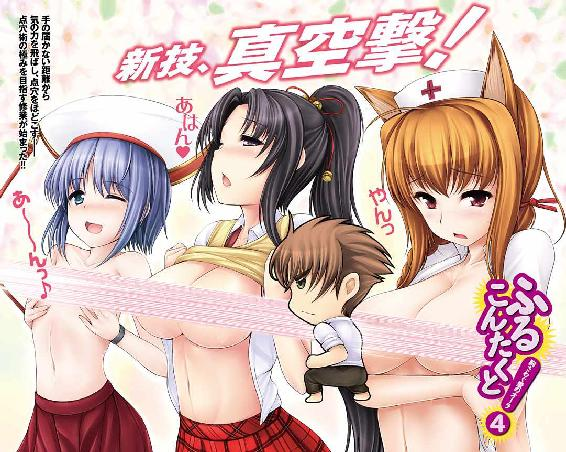
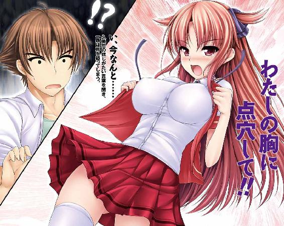
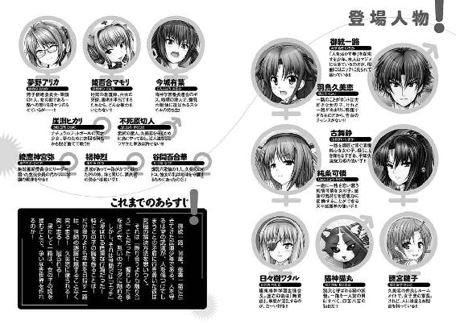
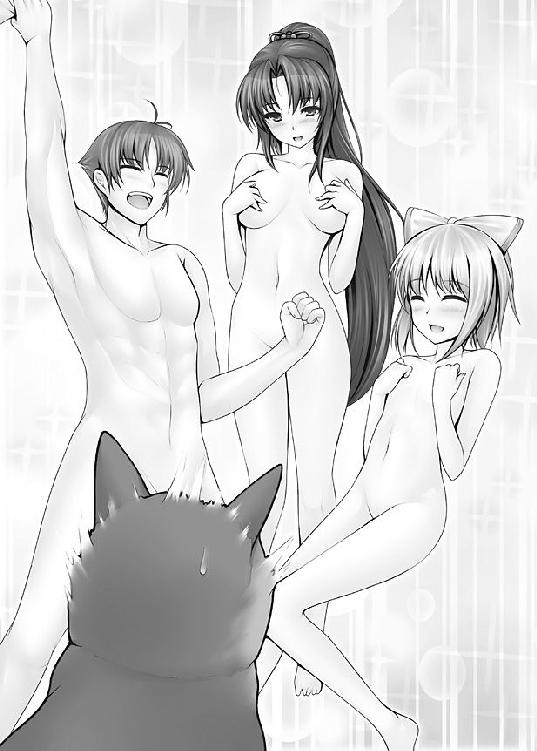
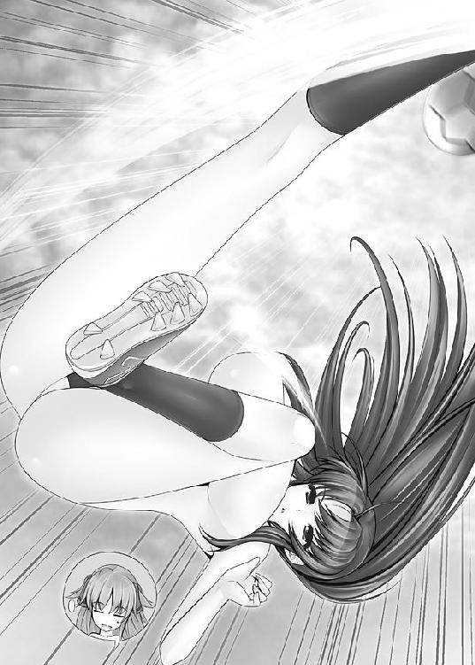
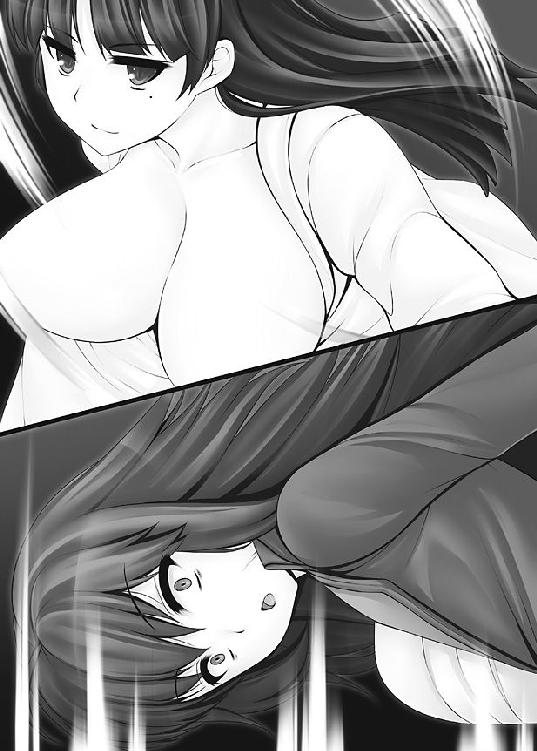
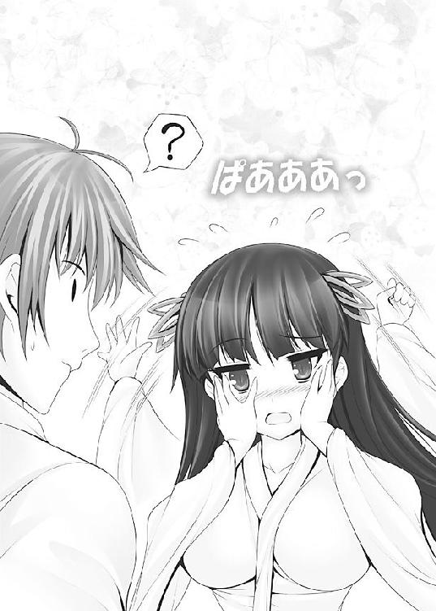
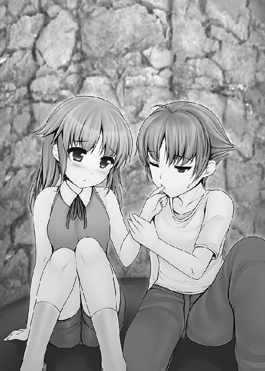
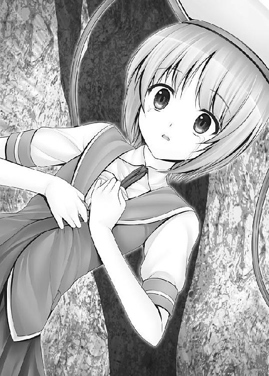
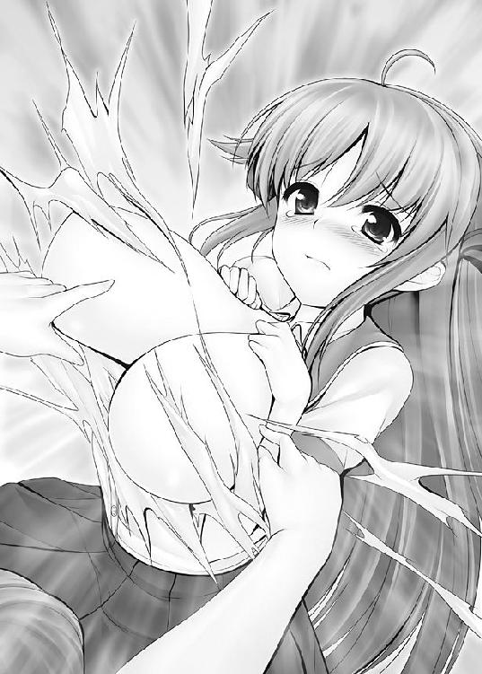

| ふるこんたくと！ ４ 胸さわぐ愛のオーラ (角川スニーカー文庫) | |
| あすか 正太 | |
| 角川書店(角川グループパブリッシング) (2010) | |


ふるこんたくと！
４ 胸さわぐ愛のオーラ
あすか正太
角川スニーカー文庫
本作品の全部または一部を無断で複製、転載、配信、送信したり、ホームページ上に転載することを禁止します。また、本作品の内容を無断で改変、改ざん等を行うことも禁止します。
本作品購入時にご承諾いただいた規約により、有償・無償にかかわらず本作品を第三者に譲渡することはできません。
本作品を示すサムネイルなどのイメージ画像は、再ダウンロード時に予告なく変更される場合があります。
本作品は縦書きでレイアウトされています。
また、ご覧になるリーディングシステムにより、表示の差が認められることがあります。

口絵・本文イラスト／uni8
序
ただそれだけのために存在しているという意味で、彼は自分を武具とみなしていた。
「久美恋を守りに来た」
静かに彼は言う。
名を、不死原切人。
名刀のようなたたずまいをした、武道家であった。
大人である。成人はしている。
一見、平均よりも大きいくらいの上背の男であった。
しかし絞り込まれた筋肉は、力と機敏さの両方を兼ね備えており。見せびらかすための無駄はない。相手を砕くだけの力と、スピードを得るのに必要な柔らかさの最適なバランス、その戦闘力を正しいことだけに行使する理性。それらを高い次元でまとめる知力。
みなぎる闘志が匂い立つような男であった。
「大人になったな」
この島──極東鳴神学園を統べる生徒会長、日々樹ワタルは微笑した。
背丈は彼女のほうが子供に見えるほどなのに、彼女のまなざしは姉が弟を見るようでもある。
実際、10年前はそうだった。
切人とワタルは、沖縄の海をのぞむ港に立っている。
まわりに人はいない。
切人は会長に一歩近づいた。
「俺は本気だ。この島を......いや、この星ぜんぶをひっくり返したって、久美恋を守ってみせる」
口調は静かだったが、決断と覚悟に満ちた声だ。
フッ、と会長は髪をかき上げた。
乾いた笑いではない。彼のことを頼もしいと感じた笑みであった。
「ヘンタイ抜きの一路か」
「一路？」
切人は尋ねた。
「近頃、久美恋のそばをちょこまかとしているヤツだ」
キッ、と切人の顔付きが変わった。
「何者だ、そいつは。大丈夫なのか？」
「大丈夫かと言われれば、まったく大丈夫ではないな。逆にヤバイ」
「ヤバイのか！」
「特に頭が」
「まったくダメじゃないか！」
元々は姉と弟のような関係である。
彼女の前に立つと、切人は少年のような顔を見せる。
「お前と似ているところがある」
「どういう意味だ!?」
「強いとかそういうのを超えたところに行こうとしている。お前に似ているだろう？」
意味深な目つきをする会長を見て、切人は答えた。
「それは一路を倒せという意味か？」
「お前より弱くては話にならんだろう」
「半端なヤツなら俺が始末するぜ」
「それでいい、不死原切人。見せてもらおうか、修行の成果を」
今日も、沖縄の空は青かった。
切人が去っていったあとも、会長はその場に止まり、静かに海を見つめた。
抜けるような夏の空を背景に、まぶしいぐらいに白い入道雲が湧き立っている。
会長はフフッと笑みをこぼした。
「切人に見下ろされる日が来ようとはな」
コツリ、と硬質のヒールがアスファルトを叩く音がした。
「む」
自分に向けられた気配を感じて、会長は振り返った。
「神宮弥か」
独特の制服を着た少女が一礼した。
絶対風紀委員会、そのトップをつとめる綾鷹神宮弥である。
毎朝、散髪をしているのではないかと思えるほど、キレイに整えられたショートボブ。凜とした顔立ち。まるで彫像のような完璧美を体現した女性である。
そんな『完璧美』な顔が、ため息と共に崩れた。
「会長......、また悪い病気ですか？」
「病気？」
「また、ろくでもない人を呼び寄せて」
「あれは勝手に来たんだ。久美恋を守るとか言ってな」
「また久美恋さんですか」
はぁ、と神宮弥はため息の追加オーダーをする。肩まですくめて。
「私は、学園がさらに乱れていくのを放置できません」
「ほう、お前の目にはそう見えるか？」
「０には何を掛けても０。会長の蒐集家ぶりは分かりますが、あのような輩を何人集めたところで、何の意味もなさないかと」
ふむ、と会長はうなずき。
「そこまで言うからには提案があるのだな、神宮弥」
「〝最強の１人〟が見つかれば、それでよいのでしょう？ 久美恋さんを守れる１人がいれば」
「お前がそこに立候補するというのか？」
「この学園の有象無象をまとめて掃除する許可をいただければ」
「出来るのか？」会長は厳しい目をして「この島には放し飼いの猛獣がうじゃうじゃといるぞ」
「男子根絶委員会とか、番長連合とかのことですか？」
「御統活人流もな」
それは神宮弥も承知である。その上で神宮弥は余裕綽々なのだ。
「会長は私の〝力〟をご存じと思っていましたが」
「たしかに。この島で......、いや、この地球でお前に勝てる〝悪〟はいないだろうな」
「それが先祖代々〝風紀の力〟を司ってきた綾鷹家の力」
神宮弥は笑んだ。その唇からは十全の自信がにじみ出ていた。
「いいだろう。存分にやるがよい」
「私は容赦しませんよ。会長が目にかけている一路という男にも」
「かまわぬ」
会長は言い切った。
「敗者に用はないからな」
一 原点回帰！自然派サッカー!!
光速不変の原理【こうそくふへんのげんり】
光の速度は絶対に変わらない。
速度＝距離時間であるので、物体の速度が光に近づくにつれ、物理学的には時間や距離のほうが速度に合わせて変化することになる。
また、加速するためには追加のエネルギーが必要となる。
そして速度は光を超えることは出来ないので、光速に近づけば近づくほど、加速度に対するエネルギー効率は落ちてしまうことになる。
以上の原則を踏まえると、物体は光速に近づくほど（加速度がのびない分だけ）質量が増すことになる。光に近づくものは、時間、距離、質量をねじまげられてしまう。
光とは、それほど絶対的な存在であるのだ。
この概念から生まれた兵器が、核兵器である。
〝ＣＭのあとは、週末のおすすめデートスポット〟
久美恋の耳がぴくんと動いた。
それまで『お菓子８割テレビ２割』だった比率が逆転して、テレビにぐっと目を向ける。
久美恋と鍵子がいるのは、寮の入り口を兼ねた大きなエントランスホールである。
「ん？」
文庫本を読んでいた鍵子は、久美恋に視線を向けた。
店じまいされた旅館を改造して造られた学生寮には、エントランスホールのところに応接用のソファやテーブルがある。
テレビなら、それぞれの個室にもないではなかったが、同じ番組を１人で見るのもつまんないということで、見たいものがバッティングしないかぎりみんなで見る、というのが、この寮の習慣みたいなものになっていた。
ＣＭが終わり、番組の続きが始まる。
『アクセサリー屋やカジュアルショップを巡って、デートしながら彼とペアルックをキメちゃおう』とかいう趣旨の番組だ。
「ペアルックかぁ」
ぽやや～ん、と久美恋の表情が緩む。
鍵子は、やれやれといった顔をして。
「何を考えてるか、手に取るように分かるわ......」
久美恋は、ぱあああっと顔を赤くした。
「わ、わたしは別に、一路くんとペアルックしたいとか、そんなことは考えてないんだから！」
「オマケに馬鹿正直と来てるし......」
「うぅ............」
意地悪ぅ......、と言いたげな目で久美恋は鍵子を見やった。
「はいはい、一路クンをデートに誘いたいんでしょ」
「ほら、一路くんって、いつも着の身着のままでしょ。土日でも制服着てるぐらいでしょ。私服を揃えることを覚えるのも、一路くんにとってはいいことだと思うの」
「一路クンのため、ねえ......」
しかし、鍵子はニヤニヤと意味深な笑みを浮かべるばかりである。
「あなたも心をそーとー広く取らないとねえ」
「わたしが？」
「そんなこと言いながら、どっかで『一路くんのバカ～』とか言っちゃって怒っちゃうんでしょ？」
ぐさっ、と久美恋は胸を突かれた。
「そ、そんなことないもんっ！」
必死で反論する。
鍵子は手をひらひらと振り。
「無理無理、久美恋ったら一路クンのこと、まるで理解してないんだから」
「してるもんっ！」
「本当ぉ？」
刑事が犯人を取り調べるような目を、鍵子はした。
すると久美恋は、両手の人差し指をごにょごにょとさせて。
「昔に比べたら......だけど」
「一路クンが〝修行〟しても許せる？」
「ゆ、許します」
「無理してる。あからさまなぐらいに無理してる」
「し、してないもん」
「無理な背伸びはしないほうがいーよ」
「大丈夫！」
「どうだか」
「わたしだって、心が広くなったんだもんっ！」
久美恋は立ち上がった。
「見てて！」
──その頃、一路や静、可憐、猫丸の３人と１匹は修行場にいた。
学生寮の裏に広がる森がある。
道と言えるほどの整備もされていない獣道。そこを進んだところにある滝壺のそば。そこに一路たちは車座に座っていた。
朝の清浄な空気の中、心を清め、身体を鍛える。
そんな風に書けば、健全な青少年と見えなくもない一路たちである。
「乳を触って世界平和というスローガンには問題があるのではないかと思うのだが」
真面目な顔をして、一路はつぶやいた。
「今ごろ気付いたのか！」
一路のそばで、猫丸は驚いた。
「活人流が変態拳法だと、誤解されないためにはどうしたらよいだろう？」
「いや、誤解じゃなくて理解だろ」と、猫丸。
「拳法をたしなみながら戦わないという姿勢が、矛盾のように思われてしまうのかと」
「静っち。違うって」と、猫丸。
「歴史を変えるような考えは、最初は理解されないものです」と、可憐。
「永遠に無理だって」と、猫丸。
「うむ、分かりやすくという話か」と、一路。
「お前ら、オレっちの話を聞けよ！」
「わたくしたちに敵意がないことが、相手に伝わればよいのですが......」と、可憐。
「伝わるも何も、言っても分からぬ相手だから戦うのであって」と、静。
「構えを解いたところで、それも罠だと思われてしまえばオシマイだ」と、一路。
うーん、と３人は頭を抱えた。
自然と３人は猫丸に目を向けた。
「つまり矛盾ってことだよ」
猫丸は答えた。
「矛盾だと？」
「人質を取って立てこもる強盗の前に警察官が現れて『何もしないから中に入れてくれ』って言われても『どうぞどうぞ、ようこそいらっしゃいました』なんて言う悪党はいないだろ？」
「それはそうだな」
「まあ、警官は拳銃を捨てれば丸腰ってことになるけど、お前はそもそも武器を持ってない。つまり相手にしてみれば、お前に敵意がないことを確かめる方法がないってことだ」
ぽん、と一路は手を打った。
「つまり、全裸がいいということか！」
「そうそう。全裸なら敵意がないことがすぐ分かる......って、いやいやいや。そういう方向性じゃなくてだな！」
「素晴らしいですわ、一路さま」と、可憐。
「おい」
「それこそが活人です」と、静。
「ますます世間から離れるいっぽうじゃないか！」
「よし、さっそく修行だ」
「オレっちの話も聞いてくれよ......」
一路、可憐、静の３人はガバっと全裸になった。
「そもそも防具を身につけることは、相手に対する敵意の表れ。相手を信じる。いや、人間を信じるならば、防具を身につけることなどしてはいけない。つまり全裸」

「裸になりたいだけだろ、お前たち！」
と猫丸は突っ込む。が。
「自然と一体化し、全身で気の流れを感じ取るのだ」
「清々しい気分です」と、静。
「心が洗われるようですわ」と、可憐。
いい年した少年と少女が一糸まとわぬ姿になっている。
それでいて清涼な空気がかもしだされているのはどういうことか。
「オレ、もう、知らね......」
猫丸はサジを投げた。
猫にスプーンもフォークもないのだが、猫丸は目の前の現実に目を背ける以外に自分の常識を守る手段はなかった。
そう思うしかない。そう思うしかない猫丸なのだった。
「るんるんるーん」
久美恋は修行場に向かっている。
「やっぱり服よねえ。服」
誰も聞いていないのに、１人でつぶやいている。
うん、と手を握りしめて。
「わたしは普通に一路くんのこと心配してるだけだもん。デートとかじゃないんだから。デートとかじゃ......」
自分を誤魔化すような、あるいは自分を納得させるような言葉を繰り返し、滝壺のそばに辿り着いた久美恋が目の当たりにしたのは。
「制服どころか、下着も身につけてないの～～～～～～～～～～～ッ！」
全裸祭りの現場だった。
ずかずかずか。久美恋は猛牛のような勢いで一路のもとへ歩み寄った。
右手をグーにして、左手をグーにして。両肩を思いっきり怒らせて。
「こぉ～のぉぉぉぉぉ、歩くポルノグラフィがぁ～～～～～～～～～～～～～ッ！」
一路はキラリと輝く空の星になり。
ひゅるるるるるるるるるるるるる............、どべしっ、と。
見事なぐらい無様に、地面に頭から突っ込んだ。
「い、痛い............」
「ホントにもう......、まったくもう......、まっ昼間から馬鹿なことをしないでっ!!」
一路は誤解だとばかりに立ち上がり。
「馬鹿なことではない！ 敵意がないことを見せつけているだけだ！」
「有害なものを見せつけてるのっ！」
「なんと！」
一路は素直に驚いた。
無自覚だったらしい。
「こーゆーのって、政府で取り締まれないのかしら......」
──そこへだ。
「素晴らしい！ 実に素晴らしい!!」
スーツを着た壮年紳士が現れた。
誰にとっても見覚えのない人物である。一路やみんなは『なんでこんな山の中に？』と、きょとんとなるばかりである。
が、紳士は一路のことを知っているらしく。
「キミが御統一路くんか！」
「御統活人流という、見事な武術があるという話を聞いて」
笑顔で歩み寄ると、がしっと熱い握手をかわしてきた。一方的に。
「おお！ それはどんな噂を！」
「乳を触るために相手を裸にする武道だと」
「失敬な！」
一路は不満げに顔をしかめて。
「活人流は、そのように破廉恥な見せ物ではない！」
久美恋は一路の肩をぽんぽんと叩いた。
「傍目にはそんな風にしか見えていないってことよ......」
「おっと失礼。自己紹介がまだだったな。私は崖淵翔。日本ナチュラルフットボールリーグの理事長だ」
「ナチュラルフットボールリーグ？」
聞き覚えのない単語に、久美恋たちは首を傾げた。
が、崖淵は追加の説明をすることもなく、一路の両手を熱く握りしめ。
「是非、一路くんには女子日本代表チームの監督になってもらいたいのだ！」
「まぁ」「日本代表の監督に!?」
思ってもない一路の出世話に、可憐や静は目を輝かせた。
「女子チームのぉ......？」
ひしひしと伝わる嫌な予感に、眉間をぴくぴくとさせる久美恋だった。
崖淵に誘われるままに、一同はグラウンドにやってきた。
「ここって、ただのサッカーグラウンドなんだけれど......」
久美恋はかなり拍子抜けしてしまった。警戒心満々でやってきていたからだ。
「フットボールとは主にサッカーのことですからね。ナチュラルフットボールとは、ルール的にも戦術的にも複雑化した近代サッカーから距離を置いた、自然に戻るサッカーということではないでしょうか」
と、静は推理した。
「その通りだ、見たまえ！」
崖淵はゲートを指さした。
するとだ。ベンチから５人の少女たちが飛び出してきた。
一糸まとわぬ、生まれたばかりの姿で。
「全裸!?」
違う。と崖淵は否定した。
全裸ではない。
「ちゃんと下着を着けてある」
たしかに、女の子の大事な場所は隠れていた。
「シールだって！ 大事なところにシールを付けてるだけでしょ！」
胸のところに２つの絆創膏、股のところに小さな板海苔程度のシールである。
比率的にいえば、99％裸というべきか。
崖淵は、なんら恥じることなく高らかに言い切った。
「これぞ古代オリンピアの時代に戻った、全裸サッカー。ナチュラルフットボール！ キミは古代オリンピックの起源を知っているかね！」
と、崖淵は久美恋に問うた。
「こ、古代ギリシャ......でしたっけ？」
「そう！ 紀元前のギリシャで開かれたオリンピック！ その時選手は全裸だった！」
「なるほど、合点がいきました」
ぐっ、と静は手を握りしめた。
「っていうか、そんな時代にサッカーなんてなかったでしょ！」
「細かいことを気にしてはいけない」
「いや、そこ、大事な問題ですから！」
「人間には三大欲求がある、食欲、睡眠欲、そして......」
「や、やっぱり言わなくていいです！」
「全裸欲だ」
「間違ってますから、それ！」
５人制サッカーという意味ではフットサルに近い。そんな球技である。
「クスリや道具によって勝ち負けが決まる近代スポーツは間違っている!!」
「いきなり真っ当なことを言い出されても困るんですけど！」
「人間だけの力で勝負を付けるための全裸だ!!」
「だからって全裸はないと思いますっ！」
と、久美恋は肩をすくめた。
「この島でワールドカップが開かれることになったので、彼女たちは強化合宿中なのだ」
「そこまで事態は悪化してるのか......」
久美恋はますます憂鬱になった。
「めざせオリンピック！」
「「「おーっ！」」」
崖淵の煽りに、選手たちは声をあげた。
瞳が燃えていた。めらめらに燃えていた。
（何も言えない........................）
十光年ほど離れた世界で暮らしたいと思う久美恋であった。
──が、そういうわけにもいかないところが、恋する乙女の悩みどころである。
崖淵はスカウト話を再開した。
「どうかね、一路くん。彼女たちの動きを見て、思うところはないかね」
「一路くんを巻き込まないで！」
すると、一路は問題のある選手を指差した。
「強いて言えば、彼女だな」
「ほう、ヒカリか」
背番号10を背中につけている（全裸なのでタトゥシールでつけている）、サッカーで言えばエースということだ。
そのヒカリを見て、一路はコメントした。
「動きが小さい。まるで全裸を恥じらっているかのようだ」
「さすが一路くん、鋭い指摘だ」
「誰でもそんなん指摘できるよ！」
隣で久美恋は指摘した。
だが、一路は無視して、ヒカリに近づくと彼女の弱点を指摘した。
「お前は本当の力を出せていない。もっとすべての力をボールに叩き込め」
「お前に何が分かる」
ヒカリは一路を睨み付けた。
豹のような美少女である。走るために生まれてきたような身体付きをしていた。
目尻のつり上がった瞳が、ことさら彼女の獰猛さを強調している。
頰を赤らめても、羞じらいよりは闘争心の表れのように見えてしまう。
明らかに一路を部外者とし、口出しをされることを不愉快に思っていた。
「こら、ヒカリ！ なんて口の利き方をするんだ。すまないな一路くん」
「お父さん！」
ヒカリは崖淵の娘だった。
一路はヒカリの態度に腹を立てた様子も見せず。
「部外者に口出しされれば腹も立つ。それだけ真剣だということだ」
崖淵はうなずき。
「私の目に狂いはなかった」
「っていうか、崖淵さん！ どうして今になって監督を探してるんですか！」
「私が行かねばならぬ案件が海外で起こってな。代理が必要になったのだ」
「でも......一路くんは素人ですよ!?」
「世界戦に必要なのは技術よりもメンタルだ。異性の全裸に人生を賭けているといってもいい一路くんしかないと考えた」
「それ、全然、褒めてませんよっ！」
当の一路はやたらと自信満々で。
「サッカーのことはまるで分からんが、国の代表を任されるのは名誉なこと。社会の役に立つことであれば、断る理由もない。微力ながら引き受けよう」
「ありがとう！ 一路くん!!」
「社会の役に立つとはとても思えないんだけれど......」
深い......、マリアナ海溝よりも深いため息をつくしかない久美恋だった。
そして、いよいよワールドカップの日がやってきた。
経費の都合で開会式は省略。
初日に準決勝、２日目に決勝と閉幕式という強行スケジュールである。
「いきなり準決勝......!?」
久美恋は面を喰らう。久美恋、可憐、静の３人は一路に付き添ってベンチにいた。
すると、隣にいたヒカリが言った。
「今回はまだ４カ国だけど、次回は16、その次は32カ国と増えて、本家ワールドカップに匹敵する規模になるわ」
「これ以上、参加国が増えないことを祈るしかないわね......」
日本の相手はロシアである。もちろん相手も全員、全裸。
試合開始だ。
ホイッスルが鳴る。
ロシアチームはボールを奪いにかからず......。
いきなり緑の霧を、日本選手に向かって噴いてきたのだ。
至近距離にいてやられたのは、ゼッケン11番、襟裳岬である。
「ど、毒霧......!?」
うめき、襟裳岬は倒れた。
「みんな、気を付けて！」
ヒカリが叫ぶ。試合は止まらない。
「反則じゃないの!?」
久美恋はベンチを飛び出すと、近くにいた線審に食ってかかった。
が、審判はゲームを止めようとはしなかった。
「クスリ使ってるでしょ！」
「自分で服用しているわけではないから、ドーピングではない」
「人に使うのはいいの!?」
久美恋は理解できない。出来るわけがない。
「ぼ、ぼくのことは大丈夫......、です！」
よろよろと、襟裳岬は立ち上がった。
「とにかく、ロシアチームに近づいちゃダメ！」
ヒカリは言い、そして命じた。
「パスカットして、丁寧につなげていくしかない!!」
ゼッケン９番、日向灘はロシアチームからボールを奪った。
と、次の瞬間だ。
「イワン雷帝ィィィィィ!!」
ロケットパンチが飛んできた。
文字どおり、ロシア選手の肘から先がロケットのように飛び出して、日向灘に命中したのである。
「なッ......!!」
日向灘は吹き飛んだ。
転がるボールをロシアが確保、日本ゴールへ攻め込んでいく。
「今度こそ反則でしょ！」
久美恋は審判に食ってかかった。
「ゼッケン９番はボールをキープしていたので、反則ではありません」
「合法じゃないわよ！」
「サイボーグは合法です」
腕を拾いに来たロシア選手が言った。
「あれ、どう見てもファウルでしょ！」
「特殊な義手です」
「あれが手だっていうなら、相手を殴ってるも同じじゃない！」
いきり立つ久美恋を、ヒカリは止めに入った。
「ナチュラルフットボールでは、公平性の観点から、ハンディキャップのある人には最小限の武装は許されているの」
「武装って!?」
自然に戻るスポーツではなかったのか。
「平和な国でのうのうと生きてきたお前に、内戦の悲劇など分かるまい」
内戦とは１つの国の中で戦争が起こることだ。
ロケットパンチの彼女はロシア国内の民族紛争に巻き込まれて、腕を喪ってしまったのだ。
歴史の犠牲者とも言える。
「これは地雷で吹き飛んだ腕の代わり。あなたが炎のように見えたものは、消えることのない私の怒り......」
「そういう怒りはロシア政府にぶつけて！」
「おのれマルクス！」
襟裳岬が吹き飛んだ。
「スターリン！」
松山市が吹き飛んだ。
「八つ当たり～～～～～～～～～～～～～～～～～～～～!?」
ていうか、ボールを持っていない相手にロケットパンチをしている時点で明らかに反則だった。
さすがに審判が、ロシア選手に警告を与えた。
「今度やったらイエローカードだからね」
「甘すぎだよ!!」
メチャクチャすぎる............と、久美恋は思った。
前半戦が終了した。
だが、日本ベンチはすでに終戦のムードである。
戦える選手が、キーパーをのぞいてヒカリひとりしか残されていないのだ。
「このままじゃ、欠員で試合終了に......」
口惜しそうにヒカリがつぶやいた。
久美恋は、傷ついた日向灘に包帯を巻いていた。
ベンチはひたすら陰鬱なムードだ。
そこへだ。
「わたくしが代わりに出ますわ！」
「私も！」
憤懣やるかたないといった表情で、可憐と静が名乗り出た。
敵チームの非道が許せない。
２人は怒りに全身を震わせていた。怒りで爆発しそうになっていた。
気持ちは久美恋も同じだった。しかし久美恋は２人を止めた。
「出るって、２人ともサッカーを知ってるの？」
「いえ、さっぱり」と、可憐。
「どこまでお役に立てるか分かりませんが......」と、静。
「それじゃ、迷惑をかけるだけだよ！」
「いや、いてくれるだけで嬉しい」
ヒカリが言った。
「いいのっ!?」
「メンバー不足で、試合終了前にギブアップさせられることが何より悔しい」
「「頑張ります！」」
可憐と静がメンバー交代で入ることになった。
「これで４人。あと１人か......」
ちら、とヒカリは久美恋を見た。
「わたしぃ!?」
久美恋は自分を指さした。
「無理無理無理！ わたし無理!!」
「大丈夫です！ 久美恋さんの運動神経なら！」
静が太鼓判を押した。
「裸はイヤなの！」
「久美恋さんは充分にお美しいですよ」
「静さんたちは肌を晒すことへの躊躇はないの!?」
「はっはっは、愚問だな」
一路は笑った。
「そりゃアンタはノンキでいーでしょうよ！」
久美恋は一路を蹴った。一発では抑えきれず、もう一発蹴った。
そんな光景を見て......。
「オ、オレが出ます」「ボクも」
「日向灘！ 松山市！」
２人は這いずった。傷ついた身体をおして、闘志を見せた。
弱々しい。なけなしの力を必死に振り絞って、這いずる。
それを見てもなお『ワタシには関係ありません！』と言い張れるだけの非情さを、久美恋が持ち合わせているはずもなく......。
「あーん、もう、やればいいんでしょ！」
久美恋は手にしていた包帯で、一路の目をぐるぐる巻きにした。
「ぬおっ、これでは試合が見られぬ！ 何の指示も出せぬではないか！」
「見なくていいですっ」
バッと久美恋は豪快に服を脱いだ。
見事なスタイルが全開になる。豊かな胸、くびれた腰、むっちりとした太股に、しなやかな足。健康がカタチになったような美しさ、それが久美恋だった。
「もーっ、ホントのホントのホントに今日だけなんだからねっ！」
顔は真っ赤っかだった。
恥ずかしいが、しょうがない。
「ううう」
ニップレスと板海苔のような絆創膏を局部につけて、久美恋はピッチに立った。
「サッカーのルール、知らないのに......」
審判がホイッスルを鳴らす。後半戦の開始である。
３人の中で、いちはやく順応していたのは静である。
目隠し状態の一路がつぶやいた。
「元より運動神経に優れ、何事も前向き、素直な心、何より裸にためらいがない」
「最後の１つが褒め言葉なのは、どーにも納得がいかない！」
とは久美恋である。
いきなり、久美恋の前にボールが飛んできた。
「久美恋さん！ 取って！」
「って言われても、サッカーなんてしたことないし!!」
「キエエエフ！」
ロシアチームが襲いかかってきた。
文学的な比喩表現ではなく、言葉通りの意味で。
ボールではなく、久美恋めがけて、キックの嵐を仕掛けてきたのだ。
上下左右、四方八方から４人の足が。
「ッ！」
足技勝負なら負けるわけにいかない。
「竜巻の舞！」
久美恋も足技で対抗した。
死神の鎌のごとき一閃で、襲いかかってきたロシアチームを薙ぎ倒す。
リアルサッカーならレッドカードで一発退場だが、ナチュラルフットボールなら正当防衛。
ロシアチームの４人は、久美恋の一蹴りで瞬殺された。
コロコロと転がるボールを久美恋は確保した。
「武器を使わなきゃ反則にならないのよね」
久美恋もノリが分かってきたみたいだった。
いっぽうロシアチームは、久美恋の一撃で４人を喪い、メンバー交代を迫られた。
「気をつけろ！ うかつに近づけば薙ぎ倒されるぞ！」
敵チームに評価されると気分はいい。
ハッ、と久美恋はなり。
「いけないいけない。順応しちゃうところだったわ」
久美恋はヒカリにパスを送った。
後半戦は勢いづいた日本チームと、防戦に追い込まれたロシアチームとの間で、一進一退の攻防となった。
得点は、日本３─４ロシア。あと１点で追いつくところだ。
「静さん！」
ヒカリはパスを送った。
「うむ！」
静はゴール前に駆け込んだ。
ボールの軌道を読み、ジャンプ。
静はオーバーヘッドキックの体勢に入った。
ボールの軌道は静の読みどおりだった。これで決まらぬシュートはない。
（これで同点！）
ところが、だ。
「させるか！」
ロシア選手が懸命にジャンプをかまして、頭でボールの軌道をわずかにそらした。
「な......！」
静は意表を突かれた。
このままではボールは足の少し上を飛んで、キックが届かなくなってしまう。
ロシアチームのキャプテン、サーシャは叫んだ。
「よし、それでいい！」
「まだだ！」
静は叫び、ブンと身をひねった。

なんと、静は地面に着地することなく、身体を一回転させて、もう１度オーバーヘッドキックの体勢に入ったのだ。
重力の法則を無視するような動きに、サーシャは驚愕した。
「空中機動!?」
「ＡＭＢＡＣだ！」
ヒカリは目を見張った。
静は乳房の重みを利用した、ＡＭＢＡＣ（アンバック、Active Mass Balance Auto Control＝能動的質量移動による自動姿勢制御）を行ったのである。
「まさに全裸ならでは、女ならではの空中機動............！」
サーシャは息を呑んだ。
そして久美恋はちょっと引いていた。
「何でもありすぎる......」
それはともかく、静のシュートはゴールネットをゆらした。
「ゴ────────────────────────────ル！」
日本４─４ロシア。
点数は同じ。だが、追い風は日本に来ていた。
試合再開後、久美恋は敵からボールを奪い、ヒカリへ送った。
（ここで......光の......シュート!!）
渾身の力を込めて、打った。
ヒカリのシュートはロシアのゴールネットに叩き込まれる。
５─４、逆転だ。
「やりましたわ！ ヒカリさん！」
喜ぶ久美恋たち。だが、ヒカリの顔色は優れない。
（こんなんじゃない......！）
（お母さんのシュートは、もっと速い......、光のように速い......）
ヒカリは悔しそうな目をして、自分の足をみつめた。
しかし、それ以上にロシアチームは精神的に追い込まれていた。
「ん......」
サーシャはフィールドにひとり、ぽつんと取り残されたようになっている少女を発見した。
可憐である。
「つまりませんわ............」
理由は分からぬが、しょんぼりと肩を落としている。
可憐は華奢な少女だ。
軽くぶつかっただけでもポキリと折れてしまいそうな、そんな細い身体付きをしている。
「あいつを狙え......」
サーシャが命じる。
試合再開。ロシアチームは、わざと可憐にパスを送った。
「まぁ」
可憐はまず足でボールを押さえると、きょろきょろと周囲を見回した。
「パスは......、どこへ......」
「殺せ！」
サーシャが指示を出した。
可憐がボールを持っているうちに総攻撃である。
「死ねやボケ──！」
とかいう意味のロシア語で襲いかかってきた。
「お待ち申し上げておりましたわ」
そう言って、可憐は両手を合わせた。
「感謝拳！」
ズゴゴゴゴゴゴゴゴゴゴゴ......！
フィールドの中央で、突然の大爆発が発生した。
純条可憐は、地球と心を１つにしたと思いこむことで生じる超自我空間〝天然自在の境地〟の中で、ほとばしる愛を破壊力に転換させたのだ。
............どうやって？
よく分からない。しかし爆発は薔薇のような華をグラウンドに咲かせた。これは事実だった。
可憐の必殺技、天上天下唯我独尊感謝拳だ。
黒煙が去り、中から静かに可憐が現れる。
澄み切った表情をして、一言。
「やっとわたくしも一路さまのお役に立てましたわ」
ロシアチームはゴールキーパーをのぞいて全滅しているので、新しいボールを用意する必要は、もうなかった。
ぽつり、と久美恋はつぶやいた。
「一番、手を出しちゃいけない子に手を出しちゃったわね......」
......ま、そんなわけで、マップ兵器を擁する日本チームの前に大国ロシアは敗れ去ったわけである。
試合が終わった。
「あなたたちがやってくるとは思っていたわ」
ヒカリの前に現れたのは、ブラジルチームだった。
決勝の相手、その監督であった。
「カルロスさん！」
ヒカリは彼女のことを知っていた。
色黒の肌をした美人である。豪奢な金髪が輝くようだ。
「久しぶりね、ヒカリ」
「どういう関係？」
と、久美恋は隣にいた襟裳岬に聞いた。
「ヒカリのお母さんのチームメイトだったんですって」
カルロスはヒカリに向き直り。
「その目、よく似てるわ」
「お母さんにですか？」
その質問には、カルロスは答えず。
「あなたのシュート、見せてもらったわ」
そう言って、カルロスは笑い。
「あんなのが全力のシュートだっていうのなら、あなたが光のシュートを打てる日は来ないでしょうね」
彼女の声には明らかな敵意がこもっていた。
カルロスはヒカリに見下すような視線を向けた。
まるでヒカリの背後に、ヒカリではない何かを見ているようなまなざしだった。
「明日を見ていてください」
それだけを言って、ヒカリは背を向けた。
自分が弱いのだから仕方ない。そう思った。
夜、である。
「わたくし、嬉しいですわ」
可憐である。そしてここはお風呂である。
一戦を終え、彼女たちは会場そばにあるホテルの大浴場に入っているのだった。
「久美恋さんと力を合わせて戦えて、わたくしもみなさんのお役に立てて、可憐はとっても幸せです」
「変なサッカーじゃなかったら、もっとよかったんだけれどね」
「もっと久美恋さんとはお近づきになりたいです」
と、可憐は久美恋に抱きついた。湯船がばしゃんと音を立てる。
「きゃっ」
久美恋はびっくりして、可憐から離れた。
「は、恥ずかしいよぉ」
「まあ」
可憐は久美恋の胸を見て、ある一点に注目した。
それはぽわんぽわんに豊かな乳房の中心にある、乳輪のカタチだった。
「かわいらしいですわ。まるでハートマークみたい」
──その頃、ヒカリはひとり、壁に向かってボールを打っていた。
「もう夜だぞ」
一路である。ヒカリの特訓に気付き、現れたのだ。
「無理はするな、明日の試合に差し支える」
「ダメなの。このままじゃ」
ヒカリはそう言って、練習を続けた。
一心不乱にシュートを打ち続ける。
「光のシュートを打ちたいの」
「光のシュート、だと？」
「母が１度だけ打ったシュートよ。目にも留まらぬ速度でキーパーの反応も許さず、ゴールネットを揺さぶった」
「どうして、そこまでして勝ちたいのだ？」
「ナチュラルフットボールを元の状態に戻したいの」
「元の？」
「ロケットパンチとか、毒薬の出てこない世界よ」
「たしかに......、それはその通りだな。ヒカリはなぜそこまで入れ込む」
「ナチュラルフットボールは父と母が出会ったきっかけ。世界を獲ることは母子二代の夢なの」
ヒカリはボールを足で拾うと、ぽんと蹴って胸でキャッチする。
「......正直、オレはこれがサッカーなのか分からなくなっているが、１つだけ言えることは、やり方はどうあれ、本気のヤツに中途半端な者が勝てるはずはない、ということだ」
「............」
ヒカリは悔しげに唇を嚙んだ。
「試合には、他人との勝負と自分との勝負がある。全力も出さずに負けるのは、自分に負けることになるんじゃないのか？」
「どうやって、打てば」
言って、愚問だとヒカリは思った。
それは自分の問題だからだ。
「おぬしはナチュラルフットボールに対するためらいがあるのではないか？」
「あたしは全力を尽くしているわ！ これが全力なのよ!!」
一路は夜空を見上げた。そしてふたたびヒカリに視線をうつし、言った。
「明日はいい勝負が出来るといいな」
翌日、である。
決勝戦のドームグラウンドで。
「............!!」
久美恋たちはあぜんとなった。
彼女たちが見たもの。それは山脈だった。
「......これがブラジルチーム......!!」
身長はゆうに２メートル。いや、４メートルを超えているだろうか。そんな選手が勢揃いしていたのだ。
「な、なによこれ～～～～～～～～っ！」
「ブラジルは空気がいいのよ。だからよく育っちゃって」
さらりとカルロス監督は言った。
「噓！ 絶対に噓よ！」
久美恋が断じる。
試合開始だ。
ブラジルチームは問答無用でミサイルを打ってきた。
「おっぱいからロケット!?」
久美恋たちは間一髪のところでかわした。
ミサイルは壁に当たる。大破、スタンドが。マジで火薬。マジでミサイル。
ここは戦場か......、と思う間もなく。
「よそ見をしている場合？」
上空からは巨大な岩が、ドガガン、と２発落とされた。
それもまた乳であった。
10倍サイズのおっぱいは地面にたたきつけただけで大地が割れ、ドームを揺らした。
「サッカーやる気ないでしょ、あなたたち！」
「女の武器を使って何が悪い！」
「武器の意味が違う～っ！」
怒る久美恋。静はバカ正直に感心して。
「これがラテンの力か......！」
「違う！ 行ったことないけど、ラテンの人はこんなんじゃないよ！」
「サッカーに集中して！」
叫び、ヒカリは走った。
ブラジルチームはシュートを打ってきた。
おっぱいからロケットも打った。
丸いものが３つ、日本ゴールに飛んでくる。
「ボールが......、３つ!?」
ゴールを守る青森崎は果敢に反応した。
ボールに触れる。おっぱいだった。爆発した。
マジでおっぱいが爆発したのだ。
「うわああああああっ！」
残りのおっぱいはスタンドを破壊し、サッカーボールはゴールをゆらした。
ブラジルチームの先制点である。
「なによそれ！」
久美恋は激昂した。
「あたしたちは正々堂々勝つだけよ」
ヒカリは怒りを抑えて、センターサークルに戻った。
試合再開だ。日本ボールである。
「こうなったら......！」
ヒカリはドリブルで速攻に出た。
ブラジルチームはブロックに入る。
山脈のような高さをした選手が左右からヒカリを押しつぶそうと迫る。
（パスを出さなくちゃ......、いや！）
ヒカリは正面突破に出た。
「サンパウロォォォォォォ！」
山脈はジャンプ、ヒカリをぺちゃんこにしようと襲いかかった。
ヒカリは思い切り体勢を低くして、加速。
「うおおおおおおおおおおおおおおおおおおおおおおおっ！」
２人の山脈はヒカリを捉えきれず、互いに激突した。自爆だ。
ヒカリはドリブルでゴールを射程距離に捉えた。
目の前にいるのはキーパーだけ。
「みんなの仇......！」
渾身の力を込めて、ヒカリはシュートの体勢に入った。蹴る。
（光のシュート......、今こそ！）
そう錯覚するほど、高速のシュートだった。
目で追うことが出来ない。それほどの速さの蹴りをヒカリは放った。
「甘い」
ブラジルチームのキーパーは笑った。
なんと、彼女はシュートに正確に反応していた。
そしてカルロス監督は言い切った。
「どんなボールも、破壊してしまえばゴールには届かない」
「え......？」
耳を疑うようなカルロスの一言、その直後だ。
キーパーは、飛んできたボールを手刀で叩き割った。
ボールは無残に破裂した。
「............ッ！」
日本、無得点。
「セービングでボールを破壊してしまえば、シュートという行為そのものが無意味になる！」
カルロス監督は豪語した。
「これぞ究極のディフェンス！ これが究極のキーパーよ！」
「ボールを......、破壊するなんて......、そんな......！」
ヒカリは呆然を飛び越えて、愕然となった。
カルロスは絶望にうちひしがれるヒカリに向かい、見下ろした。
「どう？ 私のチームは」
「サッカーを破壊するつもりなの？」
怒りを込めて、ヒカリはつぶやいた。
「そうよ、私はサッカーが憎い」
「どうして......！ あなたはナチュラルフットボールの選手だったんでしょう！ サッカーを愛していたんでしょう!?」
「だからよ」
カルロスは残忍な笑みを浮かべるだけだ。
「あなたの夢を奪うことが私の目的！」
「............ッ！」
くるり、とカルロスは背を向けて、ベンチへと戻った。
試合は再開された。
だが、文字どおりの圧倒的な火力、文字どおりの無敵な防御力の前に、日本チームはなすすべがなかった。
ボールやら、そうでないものが次々とキーパー青森崎を襲う。
２対０、３対０......。
１００対０。
〝ピピーッ〟
ホイッスルが鳴った。ようやく前半戦が終了した。
「............！」
ヒカリはガックリと膝をついた。
落ち込むヒカリの前に、一路が現れる。
「すごいキーパーだな、ボールを破壊するとは」
「ありえないにも、ほどがあるわ」
「光のシュートでも敵わなかったか」
「あんなのは光のシュートじゃない。あんなのは......！」
悔しげに、ヒカリは呻いた。
「打てなかったのか？」
「あたしには無理だったのよ！」
ヒカリは声を荒げた。
すべてが虚しく思えた。自分の力不足も、カルロスの悪逆非道も。
「無理だとは思えぬが」
「無理よ、あたしはお母さんじゃない」
「母から受け継いだ身体がある」
「あたしが全力を出していないっていうの!?」
「自分で考えろ」
「お前、監督だろう！」
「教えたところで、逆に突っ張るだけのお前に、言えることなどあるものか」
それは一路の作戦だった。
何を言っても聞く耳を持たないヒカリに、わざと逆のアプローチをしたのだ。
「き、聞いてやる、言え！」
「身体を裸にしているだけじゃダメだ。心を裸にしなければ」
「心......だって？」
「身体だけを裸にしたところで何の意味がある？」
「心を裸にするというのは、どういう意味だ」
「身体を裸にすることだ」
はぁ!? ヒカリは目が点になった。
「あんた、さっき、身体を裸にしてるだけじゃダメって言ったじゃない」
「まだ隠している部分があるだろう」
「えっ、これっ!?」
ヒカリは左右の乳房と股の中心を隠す、わずかばかりのガードに目をやった。
手で隠せるほどの大きさしかない。隠してしまえば全裸と見間違えるほどだ。
「こ、これを剝がせというのか？」
ヒカリは顔を真っ赤にした。
「限界を超える方法が他にあるなら何でもいい。オレなら裸になるというだけだ」
「あんたは男だからでしょう！」
「む、それもそうか」
「あっさり引き下がらないでよ！」
う～～～～っ、とヒカリは燻った。
横目で、ブラジル側のベンチを見る。
ヒカリの視線に気付いたカルロスが、不敵な笑みを浮かべた。
（負けられない......、絶対に負けたくない......ッ！）
ヒカリはニップレスと板海苔を外した。
丸裸である。一糸まとわぬ、生まれたままの姿である。
意味はない。あるわけない。
だが、後戻りできない行為をしたことでヒカリのスイッチが入ったこともまた、事実であった。
ちなみに全裸は反則ではない。
じわじわと、不思議な感覚がヒカリの身体を包んでいった。
「心が晴れ渡ってくるような......、何も怖いものがなくなってくるような......」
何かが吹っ切れた、というべきか。
「身体が熱くなってくる......、こう、頰が赤くなるような......、これが闘志というものか」
「違うから！」と、久美恋が突っ込んだ。
後半戦が開始した。
ヒカリはボールの行方だけに集中した。
パスが回ってきた。
（ボールを破壊するキーパーから点を取るには......！）
光のシュートしかない。ヒカリは思った。
確信は自信となり、燃えるような思いが右足に装塡される。
（今なら......、打てる......！）
渾身の力を込めて、ヒカリはシュートを放った。
「行っけえええええええええええええええええええええええええええええええええ！」
しかし、キーパーはシュートの軌道を読んでいた。
「フフ......。見切った」
余裕の手が伸びた。その手がボールに触れる。
やはり防がれるのか──誰もがそう思った時だった。
「なッ......！」
キーパーの顔が驚きに歪んだ。
ボールを叩き割るどころか、シュートの重さに手の骨を砕かれたからだ。
サッカーボールはキーパーの後方へ抜ける。
「光のシュートは、超質量のシュート！」
光速不変の原理である。
物体の質量は光速に近づくほどに重たくなり、光速になった瞬間に無限大となる。
すなわち、ブラックホールの誕生だ。
「行っけええええええええええええええええええええええええええええええええっ！」
凄まじい質量によって、ボールはゴールネットをブチ抜き......。
ドームを破壊した。
ブラジルチームの攻撃によって累積されたダメージもあっただろう。しかし、トドメを刺したのはヒカリのシュートだった。
屋根が崩落する。鉄骨が落ちる。試合どころの事態ではなくなった。
「............ッ！」
カルロスの頭上に鉄骨が落ちてきた。
逃げられない。巨大すぎて逃げられない。
カルロスは死を覚悟した。
「間に合え──っ！」
ヒカリの足が鉄骨を吹き飛ばした。
カルロスを助けに入ったのだ。
「どうして......!?」
カルロスは驚く、驚くしかない。
ヒカリは自分を憎みこそすれ、助ける理由などないからだ。
「サッカーは人を傷つけるスポーツじゃないから」
「............」
カルロスはヒカリの優しさに胸を打たれ、がくりとうなだれた。
「私の負けよ」
カルロスは、自分がこうなってしまった理由を話すことにした。
かつてカルロスは、ヒカリの両親と同じチームに属していた。
共にナチュラルフットボールに青春を燃やしていた仲間だった。
そして崖淵監督のことを愛していた。
しかし、彼女は恋に破れた。ヒカリの母に敗れたのだ。
「あなたのお父さん......崖淵監督が愛したナチュラルフットボールを破壊してやろうと誓ったのよ」
「............」
ヒカリはとっさに返す言葉を持たなかった。
──そこへ。
「大丈夫か!?」
ちょうどいいタイミングというべきか、間の悪いタイミングというべきか、当の本人である崖淵がやってきた。
ぴくり、とカルロスの唇が引きつるように歪んだ。
「お久しぶりね、崖淵監督。こんな時に、どこへ行ってらしたの？」
カルロスは冷たい笑みを浮かべた。
すると崖淵は気まずそうな顔をして、視線をそらした。
「ちょ、ちょっと野暮用でな」
「どこによ」
「フ、フランスまで、な」
「マリアのとこに行ってたんでしょ」
ぎくっ、と崖淵は青ざめた。
「マリアって？」
ヒカリがカルロスに聞いた。
「私やあなたのお母さんのチームメイト。つまり、監督の教え子ってことよ」
「それって......」
久美恋は嫌な予感がした。
「崖淵監督......」
すうっと、カルロスの目が鬼のようにつり上がっていった。
「私だけじゃなく、三股かけてたのね」
「実は五股」
「なんですってえええええええええええええええええええ！」
崖淵は、実は浮気の権化だったのだ。
「............カルロス監督も怒るわけだわ」
久美恋は呆れた。呆れ果てた。
「お父さん......！」
ヒカリも激怒である。
「いやあヒカリ。大人には色んな事情があってな。あはは」
「あはは、じゃないでしょう！」
「母さんにはこのことは内緒にな。今日は家に帰って、ワールドカップ優勝を祝おう。ナチュラルフットボールの未来について語り合おうじゃないか」
「こんなスポーツ！ なくします!!」
ヒカリはボールを手にし、光のシュートを放った。
ボールごと父を蹴り飛ばした。
「ぬぐおわああああああああああああああああああああ！」
終わった。色んな意味で、いろんなものが。
──まぁ、そんなこんなでドームとナチュラルフットボールは崩壊し、チームも解散した。
「ありがとう、一路監督」
ヒカリは一路に言った。
「感謝しちゃうんだ!?」
と、久美恋が驚いたので、ヒカリは笑い。
「だって、一路監督みたいな人には付き合いきれないって分かったから。あなたたちには悪いけれど」
「がーん！ なんかバカにされた気分！」
と、久美恋は落ち込み。
「ライバルが減りましたわ」
と、可憐は微笑する。
ふむ、と一路はうなずいて、締めの一言を口にした。
「全裸が好きな者もいれば、そうでない者もいる。人間いろいろだ」
「全女子の半分が全裸好きみたいな言い方しないでくれる!?」
どげしっ、と一路は久美恋に蹴られた。
二 竜虎対決！お前に彼女は渡せない!!
海 の血脈【わだつみのけつみゃく】
の血脈【わだつみのけつみゃく】
一路や静たちが属する武道家集団・八門が守護していた一族。
一族は龍の血を引いているという伝説があり、彼らの血を呑むと、不老不死に近い力を得ることが出来るという。そのため、海の血を引く者は様々な勢力から命を狙われることになった。
ちなみに遥か昔から鳴神学園の生徒会長を続けている日々樹ワタルも、海の血を呑んだ１人である。
彼女の場合、海の血の力は『新陳代謝の逆行』というカタチで作用し、年を追うごとに若返る身体になってしまった。
それが幸せなことなのか、そうでないことなのか、彼女は微笑むだけで語ろうとはしない。
沖縄は今日も暑かった。
そして久美恋がいるのは、学生寮のエントランスホールである。
久美恋はテレビドラマを見ていた。
真剣なまなざしである。一秒たりとも見逃せないとばかりに物語にのめりこんでいる。
ドラマは愛し合いながらも引き裂かれた２人が、無事に再会できたところで終わった。
「はあ......よかったぁ」
よほど堪能したのか、久美恋は幸せそうに息をついた。
「次回が楽しみですね」
隣で見ていた可憐が言う。
「最近、この手のドラマに弱くて」
「ラブストーリーって、いつ見ても、胸が熱くなりますよねえ」
「なんか、悲しくなっちゃうのよね......、幸せな人を見ていると」
久美恋はチラリと廊下の隅を見た。
一路は逆立ちをして、腕立てをしている。
ドラマなどには目もくれず、黙々と体力づくりに励むばかりである。
「はぁ......」
「どうしたのだ？」
久美恋の深いため息を聞いて、一路が尋ねた。
「久美恋さん、塞いでいらっしゃるのですわ」
「オレたちがいるではないか」一路は立ち上がった。
「わたくしもです」「私もですわ」可憐と静も立ち上がった。
「気分を変えるには点穴が一番だ。血の流れがよくなるだけで、心はぐっと軽くなるものだ」
「さあ、久美恋さんもお脱ぎになって！」
「みなさんで久美恋さんを盛り上げていきましょう！」
「そーれーがー、わたしを憂鬱にさせるのよ────────────！」
沖縄は今日も暑かった。
「なぜ、久美恋どのは怒るのだろうな」
腕を組み、一路は首をひねった。
例によって、反省会である。
学生寮の裏、滝壺のそばにある修行場に、一路や可憐、静、猫丸は集っていた。
可憐が口を開いた。
「女の子には、毎月、意味もなくイライラする時期があるのです」
「なんと、まことか！」
初耳である。一路は驚いた。
「それはどれぐらいの期間続くのだ？」
「一週間ほどですわ」
「久美恋どののイライラは一週間では済んでいない気もするが......」
「人それぞれですわ」
「なるほど」
一路は納得した。
「わたくし、月のモノを止める方法を知っておりますわ」
（か、可憐どの!?）
さっきから隣で話を聞いていた静は、顔を真っ赤にしていた。
（静ちゃん、知っているんだ......）
と、思う猫丸である。
「それは気になる。是非とも教えて欲しい」
「師匠っ!?」
静はアタフタとするばかりだ。
可憐はさらりと。
「畏まりましたわ」
──と、そこへである。
「許さんぞおおおおおおおおおおおおおおおおおおおおおおおおおおおおおおおお！」
とてつもない大音声とともに、１人の男が殴り込んできた。
一路たちにとって謎の男である。不死原切人だ。
「さっきから聞いておれば、ふしだらな発言の数々、聞き捨てならん!!」
「ふしだら？ 何がだ？」
まったくもって自覚のない一路は首を傾げる。
「貴様、久美恋のことが好きなんだろう！」
「うむ、嫁にする」
「この浮気モノがあああああああああああああああああああああああああああああ！」
すごいパンチであった。武術の達人であるハズの一路が一撃で大地に叩き伏せられた。
「一路さまっ！」
可憐は駆け寄って、一路をかばう姿勢を取った。
「文句があるなら、わたくしを殴りなさい！」
「女は殴らぬ」
「そんなところだけ紳士的でも、許せませんわ」
可憐は切人を睨み付けた。
「はっきり分かった。お前たちに久美恋を任せるわけにはいかんな」
「武道家なら、言葉はいらぬだろう」
一路は立ち上がった。拳を固め、構えを取る。
「勝負か？ 面白い」
むしろその挑戦を待っていたと言わんばかりに、切人は笑った。
切人は足技を使う武道家だった。
一路の拳と切人の足がぶつかり合って、弾ける。
後ろに跳んで、互いに距離を取り、じりじりと間合いを詰める。
（この男......、出来る！）
切人の実力は相当に高いと、一路は判断した。
かたや切人は一路の評価を決めかねていた。
（迷いのない一打......！ 邪な男の放てる拳ではない......！）
（しかし......！ 久美恋に近づいている以上、血を狙っていると考えるしかない......！）
切人の足は鋭かった。
一路は打撃の間合いに近づくが、切人からは超高速の蹴りが飛んでくる。
（拳が届かぬ......！）
一路は真空刃を放った。
「その程度の風か！」
切人は両手を地面に突くと、両足を大きく一閃させた。
「天地伏虎脚!!」
巻き起こす風の威力で、真空刃の威力は粉砕された。
「その程度か！」
切人は抜く手も見せず、一路の懐に踏み込んだ。
稲を刈るように、一路の足をすくうと、倒れた彼を組み伏せる。
「さあて、腕の一本でも貰おうか。負けたんだから文句はないだろう」
「くっ......！」
勝負あった──と、誰もが思った時だ。
「切人さん!?」
久美恋の声だった。彼女と鍵子はご飯の時間だからと、一路たちを呼びに来たのだった。
彼女を見た途端、切人の表情も優しいものに変わった。
「久しぶりだな」
「どうしたの？ 切人さんは修行の旅に出るって......」
それは切人にとっての本題だった。
切人は大事な話をするために、一路を忘れ、久美恋のもとへ歩んだ。
「お前を取り戻しに来た。この島は久美恋、お前にとって危険だ」
久美恋の表情が暗く曇る。
「......お母さんに頼まれたの？」
「俺の判断で来た。が、許可は取ってある」
「切人の話は本当だ」
そう言って、鳴神学園生徒会長──日々樹ワタルが現れた。
「会長!?」
「私としてはハニーにいつまでもこの島にいて欲しいが......、親に出てこられては仕方あるまい」
「そんな......」
久美恋は口ごもった。
母親の言葉はそれほど大きいのか、久美恋は何も言えなくなり、押し黙るしかなくなった。
「........................」
一路はゆっくりと立ち上がりながら、鍵子の様子を見た。
こういう時いつもなら、久美恋の代わりに首を突っ込んでくるはずの鍵子も、この問題に対しては口を開かない。
逆らえない空気が、そこにはあったのだ。
何かを言えるのは、何があろうと空気を読まない男──御統一路しかいなかった。
「久美恋どのが帰らないといけないのは、オレが弱かったせいか」
切人は不敵な笑みを浮かべて。
「次は勝てるとでも言いたげだな」
「再戦を申し込む。次は負けぬ」
「ほう」
切人は楽しそうな顔をした。
「俺に勝つつもりか、お前」
「オレは久美恋どのを守るためにいる」
決然と一路は言い切った。
太陽が西に没しようとしている。
学生寮の脇にある空き地で、切人はひとり、演武を繰り返していた。
鍵子が現れる。
「切人さんの本当の目的は何なの？」
単刀直入に、鍵子は聞いた。
「裏も表もない。ここにいては久美恋のためにならんと思った、それだけだ」
「アタシが久美恋の秘密を知っているとしても？」
切人は顔色を変えた。
「何者だ。お前」
「彼女のもう片方の親も心配症でね」
「父方のほうか」
「本家に戻ったほうが、却って狙われやすいって考え方もあるわよ」
鍵子の口調の軽さに、切人はため息をついた。
「お前は血の恐ろしさが分かってはいないようだな」
「一路クンは悪い奴じゃないよ」
「いいヤツなだけではダメだ。弱いヤツでは久美恋を守れん」
「一路クンは弱くないよ」
「海 の血族を守れる力があるとは思えんな」
の血族を守れる力があるとは思えんな」
「海の血を飲めば誰だってスーパーマンだもの。狙う人は多いだろうけれど」
「今、守れなければ意味がない」
厳しい口調で、切人は言った。
「久美恋のこと、好きなの？」
「好き、か」
切人は懐かしいものを見るような目をし。
「そういう感情を持ったことはある。昔の話だが」
「やっぱり」
「久美恋には４つ年上の姉がいた」
「キレイな人だったの？」
「とても口では言い表せないほど美しい人だった。心の美しさがそのままカタチになったような人だった。手の届かない人だった」
「諦めることないのに」
「俺が一人前になる前に死んでしまった」
切人は、鍵子に背を向けた。
「今、強くなければ、何も守れないのだ」
──いっぽう、修行場では。
一路、可憐、静の３人と、陣中見舞いに来ていたマモリが車座に座っていた。
姫百合マモリ。看護学校に通う女の子である。
会話の口火を切ったのは一路だった。
「切人の足技は鋭く、強い」
「足技はなによりリーチが違います」と静。
「点穴しようにも手が届きませんと......」と可憐。
「遠距離点穴をするしかないんじゃない？」とマモリ。
「それだ！」
ひらめきを受けたのか、一路は立ち上がった。
「手の届かない距離に点穴をする。その名も、渦勁真空撃！」
「それはどのようなものなのですか」静が聞いた。
「真空刃が面に対するのに対し、ただ一点だけを狙い撃つ点穴だ」
「難しい技ですね」
「むろん、難易度は真空刃の比ではない。静、修行の相手になってくれるか？」
「喜んで！」
さっそく静は脱いだ。
脱ぐ必要はないが、脱いだ。
見事な乳房が露わとなる。エベレストにも匹敵する双峰だ。
しかし、一路と静の間に色めいた雰囲気はない。
これはあくまで武術の修行だからである。
一路は拳を突き出した。
直接は触れない。気の力を飛ばしたのだ。
静の乳房がぷるんと震えた。
「あっ......」
甘い声が、静の唇から漏れた。
いつもより柔らかい衝撃。それが却って静をドキドキさせた。
（これはいつもの、直接触れられる行為とは違う）
撫でられるような......。
愛でられるような......。
「不思議......、弱いほうが感じるなんて......」
「感じる？ 感じるとは何だ？」
一路が聞いてきた。
静は恥ずかしそうに目を細めて。
「身体が......、しびれるような......。しびれるといっても痛いわけではなく......」
「どんな感覚だ？」
「ぼうっとして......、勇ましい気持ちが消えていくのです」
「なんと！ 闘争心がなくなるのか！」
「一路さま、まさに活人ですわ！」
可憐も喜んだ。
うむ、と一路もうなずき。
「もっと研究せねば。いいか、静」
「喜んで！」
一路の役に立てる。静は瞳を輝かせた。
うずうずしてきたのは、それを見ている可憐やマモリのほうである。
（これは黙って見ている手はないのでは？）とか、思い始めたのだ。
「一路、あたしも訓練してくれ！」
「わたくしもお願いします」
マモリと可憐も言ってきた。
「うむ、助かる！」
みんな裸になった。
一路は順に気の力を飛ばしていった。
「あん」「あんっ」「あ～～～～んっ♪」
静、可憐、マモリの甘い声が響く。
うまくいくと、指突が決まって、感じてくれる。
が、それが本題ではない。
「これはこれで面白いが、いかんせん威力が弱い」
そんなことを言って、一路は考え込んだ。
力が足りない。押しが弱いのだ。
「どうすれば、衝撃力を強めることが出来るのか......！」
一路は考え込んだ。
「手のひらじゃなくて、指先で放つのよ？」
マモリが言った。
「ホースで水を撒く時、ホースの口を指で押さえたほうが勢いよく飛び出すでしょ」
「指先に気の力を絞り込めということか」
「そう」
「理屈としては分かる」
直接、指を当てる点穴の力を１００とする。
１００の面積にぶつければ、威力は１００１００＝１。真空刃の威力がだいたいそれぐらいだ。
10の面積にぶつければ、威力は１００10＝10。今の真空撃だ。足りない。
１の面積にぶつけることが出来れば、威力は１００１＝１００。
「指を当てるのと同じだけの威力を放つことが出来れば、足技にも勝てる！」
集中やイメージの仕方、ハリの穴に糸を通すようなコントロール力。
それらすべてを高い次元で制御できるようにならなければならない。
「まずは修行だ！ 一にも二にも修行だ！」
言って、一路が立ち上がったところへだ。
「あんたってば、目を離すとホントろくなことをしないわねえ！」
アリカだった。
手には新しい武器を持っていた。
サスマタだ。先端がＹ字型になっていて、押し当てることで相手を取り押さえる。警察などが暴徒鎮圧に使用している武器である。
それを打ち出すライフルだ。
「大人しく捕まりなさい！」
アリカは打った。
一路はすばやくかわした。
サスマタは一路の後方にあった岩に向かって飛んでいった。
ドガアアアアアアアアアアアアアアアアアアアアアアアアアアアアアアアアアアン！
岩が、木っ端微塵に吹き飛んだ。
サスマタに爆薬が仕込まれていたのだ。これにはアリカが驚いた。
「ゆ......歪美......!?」
傷つけずに捕まえるための武器に、爆薬。
アリカは開発者である歪美の発想がまるで理解できなかった。
（いや......歪美ならやりそうなこと）
アリカは、ため息をついた。
（こんな武器、使えない）
しかし、今更、あなたを傷つけたくないからと矛を収めることもできない。
「一路！ 大人しくしなさい！」
直後、アリカは足を滑らせた。
頭上に発射してしまう。
滝の上にある大岩を砕いてしまった。
頂上である。大岩はアリカめがけて落ちてきた。
一路は動いた。
「真空撃！」
一路の手から放たれた衝撃波が、岩を粉々にした。
だが、それは人間ほどの大きさの岩を、サッカーボールぐらいに砕いただけだ。
アリカが下敷きになることには変わりがない。
一路はアリカのもとへ飛び込んだ。
「師匠！」「一路さま！」
静と可憐が叫ぶ。
「大丈夫だ」
立ち上がり、一路は笑顔を見せた。
「くっ......」
すぐに苦痛に顔を歪める。
「腕を見せなさい」
マモリが一路の手を取った。
「やっぱり！ 怪我をしてるじゃない！」
「大丈夫だ。この程度」
「明日、闘いをするのでなければね」
呆れたように、マモリは肩をすくめた。
仕草とは正反対に、心は本気で一路のことを心配している。
「五体満足で勝てない相手に、右手が使えない状態で勝てるわけないでしょう！」
「切人さんに言って、延期して貰ってはどうでしょうか」
可憐が提案した。
「あ、あたしがお願いしてもいいわよ」
と、アリカが言った。
注目されると、アリカは顔を赤くしてうつむき。
「勘違いしないでよ。アンタに借りを作りたくないだけなんだから！」
「気持ちだけは有りがたくもらっておく」
そう、一路は言った。
「って、戦うつもりなの!? アンタ、バカじゃない!?」
「そうですわ、一路さま」
可憐も止めに入った。
「しょせん試合です。手負いの一路さまが挑んだところで切人さまが納得なさるとも思えません」
「試合だからこそ、だ」
一路は言った。
「本当の敵はいつ襲ってくるか分からぬ。いま戦えぬ者が、守ると言ったところで誰が信じるだろう。だから、オレは戦う」
決然と、一路は言った。
──その頃、切人は１人でいた。
月を見上げながら、気を練りこんでいた。
すべては明日の勝負に向けての準備である。
わずかたりとも手を抜くつもりはなかった。
（清々しいほどにまっすぐな瞳をした男だった......）
切人は一路のことを思い出した。
（拳にも迷いがない）
間違ったことをすることがあっても、曲がったことはしない、そんな男に見えた。
（だが、それだけではダメだ）
（久美恋は龍の一族......）
（誰もが命を狙う存在......）
（だから守らなければならない......）
それが自分に出来る、精一杯のことだと切人は思うのだった。
明朝、約束の時間がやってきた。
場所は同じ──滝壺のそばにある空き地である。
先に来ていたのは切人だった。
土地勘のない場所は、早めに来て調べておくのは兵法の常道だった。
一路は包帯を巻かず、怪我を隠して現れた。
切人は一路の様子をうかがった。
「怪我をしているのか？ 腕を」
「ひねっただけだ。問題ない」
やせ我慢だろう、と切人は思った。
姿勢とはバランスだ。だから歩き方を見れば、相手の具合が分かる。
歩き方１つで一路が右腕を痛めていることが、切人には見えていた。
「ろくに動かせぬ腕で俺に勝つつもりか」
「敵はこちらが不調な時ほど襲ってくるものだ」
「生意気な」
切人は笑みを浮かべた。
「だが、弱い男に久美恋を任せるわけにはいかない」
両者は睨み合った。
隙をうかがう。汗を浮かべながら対峙しあった。
先に動いたのは切人だった。一路が反応した。
「真空撃！」
一路は叫んだ。
しかし、放たれたのは、ただの真空刃だった。
切人はやすやすと回避した。真空刃は後方へ飛んでいく。
「その程度か！」
切人は反撃に出ようとした。
その時、少女たちの悲鳴が聞こえてきた。
真空刃が久美恋たちの服をばっさりと切り刻んでいた。
「な、なに!?」
鼻血ブー！
切人の鼻から、噴水のような血が噴き出した。
「ど......、どういうこと？」
「女の身体は......刺激的すぎる!!」
切人は戦闘不能に陥り、倒れ込んだ。
鍵子はびっくりした。
「実にシャイな人だったのね......」
──数分後、意識を取り戻した切人は敗北を認めた。
「すまなかった、一路」
男として、切人は敗北を認めた。
切腹しかねない勢いで土下座をする。
「闘いで負けたわけじゃないんだし......、引き分けってことでいいんじゃ」
久美恋が提案すると、一路もうなずいた。
「オレの真空撃も、まだ未完成だ。これで勝ちと言われても納得はいかない」
きっぱりと切人は、首を横に振った。
「敵はどんな計略を使ってくるか分からぬ。それに敗れた俺に問題がある。人として未熟な証拠」
「そこまで堅苦しく考えなくても......」
「どんな時でもお前を守れる男でなければならないのだ」
「うむ、オレは久美恋どのを守る！」
「気持ちはありがたいけれど......」
裸にされては感謝も半分ぐらいの久美恋である。
一路は、可憐たちに礼を言った。
「今回もおぬしたちに助けられたな、礼を言う」
「一路さまのためなら」と、可憐。
「脱いで争いが収まるなら」と、静。
「今回もそんな結論になっちゃうの!?」
呆然と天を仰ぐしかない、久美恋だった。
三 驚天動地！地球と乳房が合体する!!
爆乳六歌仙【ばくにゅうろっかせん】
鳴神島の中でも、類い希なるバストの持ち主６人の総称。
一般学生の間では、グラビアアイドル的な位置づけをされている。しかし、彼女たちの正体は、惑星とシンクロすることにより、地球を守護する役割を与えられた６人の少女たちだった。
......とはいえ、何かを守護する何人かの戦士という存在は、現在の人類文明において別段、驚くべき事象ではない。諸兄も幾度となく目にしてきたものであろう。
問題は何故に『歌仙』なのかということだ。
歌仙とは和歌の名人ということである。乳の大きさとは何の関係もない......はずである。
「だからアタシは行かねえって言ってんだろ！」
森の中に、ひときわ大きな声が響いた。
今城有菜だ。喧嘩百段──鳴神学園の番長たちの頂点に立つ少女だ。
有菜の後ろを何者かが追いかけて来ている。
相手は白ずくめの格好で、仮面をしている。
「何事だ!?」
近くで修行をしていた一路と猫丸は飛び出した。
有菜は白ずくめの少女と戦っていた。有菜は彼女から逃げようとしているのだが、追いつかれては格闘し、また逃げ、それを繰り返していた。
「その闘い、オレが預かる！」
一路が割って入った。
「男......だと！」
白装束の少女は一路に反応した。
「影縛り！」
少女は右手で印を切った。するとだ。
「なッ!?」
一路と猫丸は手足が動かなくなった。
影を縫い止められてしまったからだ。
白装束の少女──サクヤはすかさず飛び込んで、一路のみぞおちに肘打ちを喰らわせた。
一路は意識を失い、気絶する。
有菜は違った。
サクヤの秘技をすでに知っていた有菜は、動きが速かった。
「喧嘩百段のアタシをナメてもらったら困るよ」
影を縫い止められるより早く、空に飛んだのだ。
有菜はサクヤの懐に飛び込んだ。
「もう、容赦しないよ！」
「それはアタシの台詞です」
と、サクヤは小刀を取り出した。
有菜の動きが止まる。
「刺す気かい？」
「あなたの返事次第です。有菜さん、六歌仙の里に来ていただけますか？」
そう言って、サクヤは小刀を両手で握りしめた。
「いやだねって言ったら？」
有菜も六歌仙の名は知っていた。
鳴神島には爆乳六歌仙なるものがある。
その名の通り、とてつもないサイズの乳を持った、６人の少女たちである。
メンバーの１人が欠け、自分が欠員候補にあがっていたことも、有菜は知っていた。
けれど、堅苦しいことが嫌いな有菜は、そんな集団に取り込まれたくはなかった。
そこへ、だ。
「サクヤ、手荒なことはおやめなさい」
もうひとり、白装束の少女が姿を現した。
仮面はしていない。白雪のような肌をした美少女である。
服の上からでも隠すことのできない、見事なバストをしていた。
「待ってたよ、あんたが出てくるのをさ」
有菜はニヤリと笑った。
「私もあなたと話し合いたいと思っておりました」
有菜は彼女の間合いに、一瞬で飛び込んだ。
「バカね。接近戦でアタシに勝てると思ったのかい？」
瞬時に彼女の手首を押さえる。有菜は勝利を確信した。
しかし、彼女はわずかたりとも恐怖しなかった。
「爆乳をナメてもらっては困ります」
彼女は身体を左右に大きく振った。
するとだ。胸元から２つの乳がこぼれおち、すごい殴打を有菜にふるったのだ。

乳ビンタである。
「なに......ッ！」
有菜は回避出来なかった。
予想もしてない──乳でビンタされるだなんて予想、出来るはずもない。
どうっ、と有菜は大地に突き倒された。
「百合華さまっ」
そばにサクヤが駆けつけて、百合華の服を整える。
「乳の丸さは地球の丸さ。偉大なる乳を持った者には相応の使命があるのです」
「乳に......使命だって......!?」
身体と思考に大きなダメージを受け有菜は失神した。
サクヤは百合華に質問した。
「この者たちを始末しますか？」
さきほど気絶させた一路たちのことである。
「無用です、そのまま眠らせておきなさい」
「ですが、我々の存在を見られたからには......」
「この地球の生きとし生ける者を守るのが六歌仙の使命。その六歌仙がむやみに命を奪うものではありません」
そう言ってサクヤを諭そうとした百合華の目が、ある一点で止まった。
「一路さん......!?」
「......ん？」
一路が目覚めたのは日本家屋だった。
すぐそばに少女がいる。
「おぬしは......？」
先ほどの白装束の少女である。
少女は頭巾を取った。
「お久しぶりです、一路さん」
にっこりと百合華は微笑んだ。
「？」
しかし、一路は彼女に見覚えがないらしく、きょとんと首を傾げた。
「お忘れですか、谷間百合華です」
名前を聞いて、一路は思い出した。
「おお、懐かしい！ 何年ぶりだ、見違えるようだな！」
百合華は久美恋のイトコであった。
だから彼女は一路のことを知っていたのである。
百合華はニコニコと人なつこそうな笑みを浮かべ。
「久美恋さんはお元気ですか？」
「同じ島にいるのに、会っていないのか？」
一路は驚いた。
「............」
すると、百合華は複雑な表情をして。
「色々とお話ししておかなければならないことがありそうですね」
百合華は一路を連れて、外に出た。
「見て下さい、これが六歌仙の隠れ里です」
そこは時代を間違えたかのように、のどかな景色の広がる森の村だった。
入り口には大きな鳥居があり、そこから奥の神社に向かって参道があり、枝葉を生やすように村が広がっている。
建物は旧世紀のたたずまいを残している。
暮らしているのは女性だけだ。
六歌仙は隠れ里に忍び、侍女に囲まれながら暮らしてきたのだ。
「私たちは地球を守護する存在。六歌仙の乳は儀式によって地球とつながっているのです」
「ち、ちち、ちちきゅう？ 地球だと!?」
一路は驚いた。
まさか、乳は地球だったとは。
「なので、彼女たちは里をうかつに出ることが出来ません」
地球とシンクロした存在である彼女たちが、そろって里を出て、何か事故に巻き込まれたりでもすると、地球のバランスが崩れてしまうからだ。
「それは不自由な話だな。遊びたいことも多かろうに」
はい、と百合華はうなずいて、一路に笑みを返すと。
「でも、それが六歌仙に選ばれた者の使命ですから」
「健気だな」
「テレビも携帯電話もありませんが、のんびりした暮らしも楽しいものですよ」
と、そんな時である。
隣の建物から、有菜の怒鳴り声が聞こえてきた。
「だーかーらー、アタシは六歌仙にならねーって言ってんだろ！」
あまりの怒声に、一路たちは目を向けた。
有菜たちのいる建物の屋根が吹き飛んでいた。
吹き飛ばしたのは有菜だ。
「金縛りで言うことを聞けなくしたって、お前らの言うことなんか聞かねえからな！」
「怖いのですか？」
と、ひとりの六歌仙がつぶやいた。
月読暦、爆乳六歌仙のリーダーである。
「アタシがビビってるって言うのか？」
「六歌仙は絶対な力を持つがゆえに無力。思うがままに力をふるってきたあなたには、力を自制しなければならないことが怖いし、不快なのでしょう？」
「そんなわけあるかよ、バカにすんな」
と、言い放つ番長だが、
「負けるのがイヤなんですか？」
とか挑発される。
「誰が！」
有菜は彼女への対抗心から入門を決める。
「アタシがそんなに小さい女だっていうのかい？」
有菜が気色ばむと、暦は失笑した。
「出来るのですか？ あなたに。絶対的な力を持つがゆえに、この里で静かに暮らさなければならない矛盾を、あなたは抱えきれるのですか？」
「やってやらあ！ 見てろよ！」
六歌仙の作戦勝ち、だった。
と、そんな時である。
「御統一路、こんなところで貴方の顔を拝見するとは思いもしませんでしたわ」
暦の後ろにいた別の六歌仙に、一路は声をかけられた。
だが、一路のほうに見覚えはない。
「？」
一路は首を傾げた。
すると有菜は振り向いて。
「一路、この人は男根会の頭目だよ」
「なんと！」
一路は驚いた。超お姉様──男子根絶委員会のリーダーは、見るもたおやかで繊細な、美少女だったからだ。
ふふっ、と彼女は笑い。
「私の可愛い妹たちを、すいぶんと困らせて下さいましたわね」
「おぬしが、アリカどのたちの......」
見とれそうになる。それほどの美しさだった。
彼女は一路を見ても怒りの表情を浮かべるどころか、慈愛に満ちあふれたまなざしを向け。
「人を活かすという活人流の理想はとても素晴らしいもの。しかし、理想にこだわりすぎて、人を泣かせるような道には迷いこまないようにありたいもの」
「はい」
気品のなせる技か、彼女の言葉に一路は素直にうなずいていった。
ニコっと優しげな笑みをこぼし、彼女は暦と共に去っていった。
「彼女が、男子根絶委員会のリーダーだとは、ずいぶんと想像と違うな」
一路は感心する。と、有菜が説明した。
「男根会はもともと大人しい団体だったのさ」
番長連合と男子根絶委員会は。
「まことか」
「下の連中が、お姉様に好かれようと張り切っていくうちに、どんどん過激になっていったんだよ。アタシんとこもそう。よくあることさ」
「有菜どのは本当に六歌仙になるつもりなのか？」
「１度、口にした言葉を曲げたら女がすたるってもんさ」
「潔いな」
「これも乗りかかった船、縁のつながり、人の絆、巡り合わせに身を委ねるのは活人流だろ？」
「おぬしは活人流ではないだろう」
「なに言ってんのさ」
有菜は快活に笑った。
「闘った相手の流儀は盗む。それが喧嘩百段、今城有菜の真骨頂だよ」
そして、有菜に爆乳の力を継承させる儀式が始まった。
里の一番奥にある館──神社にみんなが集まる。
板張りの広間、円形の陣が描かれた場所の中心に有菜が座り、その東西南北に残りの四歌仙が位置する。現在、六歌仙は５人なので、１人が余る。
余るといっても、これは儀式の間、里を守るという重要な役目がある。
最年少の百合華が儀式から外れることになり、自分の館で時を待つことにした。
そばにはサツキが控えている。
「儀式は地球が自転する間、すなわち丸１日続きます。休むことなく」
「この24時間は、百合華さまが唯一の六歌仙とも言えるのですね」
「はい。今夜は眠れませんね」
「百合華さまに何があっても、他の六歌仙は手出し出来ない、と」
不穏な発言を、サツキはした。
「どうしたのですか、サツキさん」
「この時を待っていました」
直後、サツキの態度が豹変した。
「烈さまがお呼びです」
サツキは濡らした布で、百合華の口元を押さえた。
睡眠薬だ。
「サ......サツキさん、何を......！」
そう叫ぼうとしたが、百合華は抵抗ともいえる身じろぎすらできず、がっくりと倒れた。
──その頃、一路は里の外れの茂みで猫丸との合流を果たしていた。
「捜したぜえ、一路」
茂みの中から姿を現したのは猫丸だった。
「里の周りに結界が張ってあって、それに穴を開けるのに時間がかかっちまった」
「捜してくれたのか、かたじけない」
「そりゃあんな誘拐のされ方をしたら、心配にもなるさ」
「世界は広いな、乳の大きさで星を守ろうとするとは」
「なんだそりゃ」
猫丸は首をひねった。
「六歌仙というのはだな......」
と、一路が説明しようとした、その時だ。
悲鳴が聞こえた。
百合華の声だ。
「猫丸、追うぞ！」
一路は走りだしていた。
──計画的な犯行であった。
里の外にはサツキたちの仲間がいて、百合華を車に乗せて運び去った。
相手が車では、一路の足でも追いつけない。
一時はヒヤっとしたが、車が速度の出せない山道に向かってくれたおかげで、なんとか追いすがっていくことが出来た。
「このような山奥で、何をしようというのだ？」
車が消えていった洞穴の中、そこへ一路と猫丸も足を踏み入れた。
そこは、使われなくなった防空壕を改造したと思わしき施設であった。
「おい、見ろよ。あそこに門番がいるぞ」
猫丸がうながした。
ゲートらしき場所に、武器をもった１人の少女が立っている。
しかし地下である。闇はそこかしこにある。
暗がりを幸いに、一路は彼女の背後に忍び寄った。
「さっき、拉致してきた者はどこに行った？」
「お......、おとこ!?」
一路は点穴で、彼女の発声を封じた。
声が出なくなったことで、彼女は恐怖に支配された。
「悪いな、声はじきに出る。百合華どのの居場所を教えてくれ」
彼女は指をさした。
「かたじけない。わびついでに、しばらく眠っていてくれ」
一路はさらに点穴をほどこした。がくりと少女は崩れ落ちた。
一路たちは地下へ地下へと潜ってゆく。
人を見つけては点穴で質問し、あるいは眠らせ、百合華のもとへ近づいていく。
と、猫丸がつぶやいた。
「......にしても、どの子もどの子もやたらとスタイルがいいな」
「そうか？」
一路は素っ気ない物言いをした。
「どの子も惚れ惚れするような谷間揃いじゃねえか。モデル養成所かと思うほどだぜ。一路、お前もわくわくするだろ。いや、それどころじゃねえ場合だけどさ」
その時だ。百合華の声が聞こえてきた。
そばにあった扉の向こうである。
一路と猫丸は近づいた。
「何をしている？」
何者かに背後を取られた。
一路たちは飛び込んだ。
そこは大きなホールであった。
「百合華どのを返してもらおうか！」
一路たちの登場に、場は騒然となった。
「オトコ!?」
「一路さん！」
百合華だった。無事だった。
「男が生きて帰れると思うなよ！」
「何を企んでいる！」
「企んでいるとは人聞きが悪いですね」
サツキがつぶやいた。
「私たちは美を追究しているだけ」
「誘拐のどこが美だよ!?」と、猫丸。
「美を追究することは正義！ ゆえに巨乳を作り出すことも正義!!」
「巨乳......作る？」
一路は首を傾げた。するとだ。
「巨乳は作り出すもの！」
と、サツキはガバっと胸元を開いた。
「見よ！ この胸を！」
それは人類１万年の夢が詰め込まれたバストだった。
そこにあるのは、単なる乳房ではない。人間の知恵と技術によって、寄せたり、あげたり、天使の宿る谷間すら作り出すことを可能にした超兵器なのである。
別名、ただのバストアップブラなんだけれども。
「我々は大胸筋育成研究会。略してダイセイカイ！」
「やってることは大間違いだと思うがな......」と、猫丸は思う。
「私たちはダイエット、美肌。ありとあらゆるスタイル矯正法を試している！ 爆乳六歌仙である彼女を誘拐したのも、その１つ！」
「ぜんぜん正しくないじゃないか！」
猫丸が言う。そして一路も言った。
「なぜ百合華どのを誘拐したのか!?」
「爆乳六歌仙にはこんな話がある」
そう言って、サツキは百合華の胸元に手をやった。
「彼女たちの乳から出るエキスには、バストを大きくする成分が含まれていると！」
「含まれていません！ っていうか、出ません！」
百合華は顔を真っ赤にした。
「噓をつきなさい、ではそのふくらみの中に何が入っているというのです」
たぷんたぷん。サツキは百合華のふくらみを弄んだ。
「あ、あんっ......」
サツキの触り方がうまいのか、百合華は甘い吐息を漏らした。
それもそのはず、百合華の侍女として仕えていたサツキは、彼女を毎日のようにマッサージしていたのだ。
失礼のないよう、百合華の身体を大切に扱ってきたサツキにとって、百合華の感じやすいところに触れることなど、造作もないことなのであった。
「母乳は乳が大きければ出るものではないんだぜ」
猫丸がつぶやいた。
「ふふん」
サツキは鼻息荒く、猫丸の言葉を否定した。
「母乳の出し方は調査済みよ！」
「まことか」
「『ある儀式』をすれば、母乳は10月10日後に出るようになる！」
「おいおいおいおい!!」
猫丸は声をあげた。
「まことか！」
一路は驚いた。
「初耳かよ......」
猫丸は呆れた。
「驚いてる場合じゃない」
一路は百合華を助けようと動いた。
「影縛り!!」
サツキが発声した。
「くっ......」
一路は動けなくなる。猫丸はとっさに闇の中へ逃れた。
「下郎は大人しくしておれ」
サツキは一路を取り押さえて、言う。
「烈さまがお帰りになるまで、牢に入っていてもらおう」
（烈......？ ダイセイカイ首領の名前か？）
闇に逃れた猫丸は考えた。
（牢に入れるってことは、しばらくは命拾い出来たってことだよな。時間稼ぎができる）
（援軍を呼ぶしかねえ......）
猫丸は助けが必要だと考え、こっそりと脱出した。
──その頃、六歌仙の里、爆乳継承儀式の部屋にも百合華の誘拐事件が伝えられていた。
「なんだって!?」
有菜は立ち上がった。
「座りなさい、有菜さん」
制したのは六歌仙リーダーの暦である。
「今は儀式が先です」
はあっ？ と有菜は気色ばんだ。
「何を言ってんだよ。仲間が誘拐されたんだぜ!?」
「儀式を途中で終わらせるわけにはまいりません。私たちの力をあなたに伝承するまで、座を離れることはまかりなりません」
「いやだね、アタシは助けに行く」
「それなら、私を倒してから行きなさい」
胸を射貫くような鋭い声で、暦は言い切った。
「知るかよ、てめえのルールなんか」
「こんなことをしている場合じゃないだろう」
「六歌仙になるということは、星のために死ぬことを覚悟すること」
「死......、だって」
暦の意志に、有菜はたじろいだ。
「それが地球の乳を持つ者のさだめ」
「............！」
有菜はたじろいだ。
なにか間違っているように思うのだが、あまりのスケールのデカさに、圧倒されてしまう。
唇を嚙みしめて、座り込んだ。
胸のうちで色々と思案を巡らせる。今の自分に取れる、もっともよい方法を。
「さっさとやってくれよ、一秒でも早くな」
六歌仙の儀式は続く。
全員全身全裸、服という概念がない世界である。
言葉が文字になり、有菜の身体に吸い込まれる。
場の中心で、有菜は一路にすべてを委ねることにした。
（アタシの代わりに、助け出してくれ......！）
──猫丸が、学生寮にたどりついたのは夕暮れになってからのことだった。
「大変なことになっちまったんだ！」
猫丸は久美恋や可憐たちに、一路の陥った事情を説明した。
「まあ、そんなことが！」
可憐と静は立ち上がる。
それに引き替え、久美恋の態度は冷たかった。
「どーせまた、馬鹿な連中と馬鹿なことをしてるだけなんでしょー」
何事もなかったかのように、久美恋は机のお菓子に手を伸ばす。
「まあ、その指摘はあながち間違ってはないんだが......」
「どーせ、一路くんがエッチなことをして、解決するんでしょー？」
「それもそうなんだが......」
「なんでわざわざそんな場面、わたしが見に行かなくちゃいけないのよ」
と、突き放した態度の久美恋だ。
「助けに行かないと、一路たち、儀式をおっぱじめるぜ」
「儀式ぃ？」
久美恋はますます胡散臭げな目をした。
「子作りだ」
「なによそれ～っ!?」
「母乳を出すには、赤ちゃんが必要だろ？」
「確かに」と鍵子。
「何を納得してるのよっ！」
久美恋は立ち上がった。
先頭を切って、一路たちを助けに行こうとする。
「あら、放っておくんじゃなかったの？」
にやにやと鍵子が笑う。
「ほっとけるわけないでしょ～～～っ!!」
「そうこなくっちゃな！」
猫丸は皆を先導する。そして気付いた。
（......っていうか久美恋ちゃんには、百合華ちゃんがピンチって言ったほうが話が早かったかな）
──その頃、一路と百合華は牢に閉じ込められていた。
「儀式か......、思わぬ流れになってしまったな」
一路は落ち着いたものだった。
活人流の源......虚心流に型はない。
水が自在にカタチを変えるように、流れに任せるのが流儀である。
予期せぬ展開を楽しみ、臨機応変に対処するのだ。
「困ったことになりましたわ」
はぁ、と百合華はため息をついた。
「浮かない顔をしているな、百合華どの」
「だって......10月10日の儀式ですよ」
「なんと、百合華どのは儀式の内容を知っているのか？」
「えっ」
百合華は、ぱあああっと顔を赤くし。
「わ、私の口からは言えませんっ！」
「何をそんなに動揺しておるのだ」
「ど、動揺などしておりませんっ」
「しておるしておる。顔が真っ赤ではないか」
「だって、一路さんが恥ずかしいことをおっしゃいますから」
「恥ずかしい？」
一路は首をひねり、百合華に問いかけた。
「儀式とはどんなことをするのだ。教えてくれ」
「い、いやですっ」
「百合華どのは意地悪だな」
「い、意地悪は一路さんのほうです」
「？」と、一路は首をひねった。
「なぜだ。なぜオレが意地悪になるのだ。教えてくれ！」

「知りませんっ」
ぷいっ、と百合華はそっぽを向いた。
（なぜそのようにムクレるのだ？）
分からない。一路はそれ以上の追及はやめた。
「なんにせよ、脱出の策を練らねばな」
「はい」
百合華は落ち着きを取り戻すと、こくりとうなずいた。
「影縛りとやらは使えぬのか？」
一路は聞いた。しかし百合華は首を振り。
「あれは夜や闇では使えないのです」
「なるほど。光を奪えば破れる技だったのか」
「お伝えしておけばよかったですね」
「いや、助けに来ておきながら捕まったオレの不覚だ。なんとかして百合華どのだけでも脱出させる」
「昔と同じですね」
ふふっ、と百合華は懐かしそうに笑った。
「どうしたのだ？」
「思い出します」
「何を」
「一路さんの話は、久美恋さんから何度もうかがっておりますから」
「久美恋どのが？」
「昔、一路さんに助けられたという話を、それは何度も何度も」
「不安はないのか？」
「ですから、私、信じております」
にっこり、と百合華は微笑んだ。
人の心を和ませる、とても温かい笑みだった。
一路は勇気をもらった気がした。
サツキが２人の前に現れた。
「烈さまがお呼びだ」
一路と百合華は連れ出された。
先ほどのホールである。
中央の奥に祭壇がある。ビルでいえば３階建てほどの高さはある。
スポットライトで照らし出された祭壇の上に、１人の女が立っている。
ダイセイカイのリーダー、烈である。
鋼のような少女であった。折れることを知らぬ一本の剣のようでもある。
「お前が六歌仙の女か。いい胸をしている」
烈は百合華の前に立った。
「どれ、見てやろう」
百合華の襟もとに手をやり、彼女の衣服を引きちぎったのだ。
露わになった彼女の胸元から、ぽろろんと２つの乳房がこぼれ落ちる。
「きゃあっ......」
爆乳六歌仙と謳われるのに相応しき、壮大なバスト。
スケールとカタチと輝きが三位一体となった、パーフェクトなふくらみだった。
百合華は、隠しようもない胸のせめて大事な部分だけでも隠そうとするが、烈は彼女の手首をつかんで離さなかった。
そして、百合華の大事な部分に注目した。
「やはり、お前、海の娘か」
「なぜそれを！」
驚き、百合華の目が大きく見開かれた。
「乳輪が両ツノを立てた龍にも見える。それが証拠さ」
烈の言う通りだった。百合華の豊かな乳房の中心にある乳輪は円形ではなかった。
彼女の言う通り、それは龍の顔のように見えた。
あるいは、ハートマークにも。
烈が自分の素性を知っているという事実に、百合華は恐怖した。
「あなた......、何を考えているのです？」
烈の身体から、匂い立つような殺気を感じたからだ。
「分かっているだろう？ 海の血を喰らえば、人でありながら人でないものに進化できると」
「............ッ！」
そこへだ。
「ちょっと待ったぁ！」
久美恋の足が扉を木っ端微塵に破壊した。
「馬鹿げた悪ふざけはそこでおしまいよ！」
久美恋だけではない。静たちも後から続く。
烈はするどい眼光を向けた。
「ぬ、雑魚どもが」
「一路！」
切人が駆けつける。
一路は切人に縛めを解かれた。
自由になった一路は、烈に迫った。
「点穴！」
指突が決まる。烈の服が破けた。
浅黒の素肌が露わになる。それだけではない。
矯正下着をつけるほどのスタイルの持ち主であるはずの彼女の胸元から、２つの大きな大きな乳房がポロリと飛び出したのだった。
「なんと！」
一路たちは......、一路たちだけではない。彼女の部下たちも驚きの声を上げた。
「しゅ......首領!?」
烈の身体は......、その胸元には......、世にも見事でたわわな乳房が実っていたからだ。
夢でも幻でもない。静にも匹敵しうる豊乳である。
ダイセイカイのリーダーが隠れ巨乳だった。
乳を膨らませる必要のない彼女がなぜダイセイカイを治めていたのか!?
「こ、これはどういうことなのですか！」
サツキは叫んだ。彼女を始めとする面々は裏切られたようなショックに陥った。
烈はバックステップを踏んで、祭壇のひときわ高いところに立った。
もう豊満な乳房を隠そうとはしない。
「アハハハハハハ！ 見られてしまったからには仕方ないね！」
首領は、その豊乳を隠そうとはせず、堂々と言い放った。
「これが」
「あたしの思惑は、海の力を手に入れること！ そのために、この組織を利用しただけ！」
「海だと......!?」
切人は目を鋭くさせた。一路は振り向き。
「静、百合華どのを任せる」
「はい！」
一路は再び烈に迫った。
列は不敵な笑みを浮かべて構えをとる。
「まさか、こんな所で点穴使いと巡り会えるとはね」
「おぬしもか！」
２人の拳が交錯した。
凄まじい速度で激突した拳は、爆発のような炸裂音を発し、２人は弾かれるように後ずさった。
たった１回のやりとりだったが、一路は気付いた。
「お前......、禍神......！」
禍神凶──かつて一路が戦った点穴術の使い手だ。
ほう、と烈は感心した。
「妹の名を知っているとはね」
「妹だと？」
「あたしは禍神烈。無様な妹と一緒にしてもらっちゃ......腹が立つね！」
そう言って、烈は自分の腕に点穴をほどこした。
「黒点術!!」
ぶわっ、と烈の身体が膨れあがった。
黒点術とは、点穴を使った肉体増強法である。
一時的に、筋力、俊敏さ、耐久力を数倍に高めることが出来るのだ。
神経を麻痺させて、痛みすらも感じなくなる。
「一路、加勢する！」
切人が駆け込んできた。
「烏合が衆を集めるか！」
烈は豪語した。床を蹴って、蹴って、拳に加速をためる。
「闇の術に墜ちた、貴様の拳など！」
切人が一路の隣に並ぶ。烈を迎え撃つ。
２人は渾身の正拳を烈に叩き込んだ。
「ぬうわっ！」
吹き飛ばされたのは烈のほうだった。
祭壇に激しく激突、衝撃で祭壇はガラガラと崩れ落ちる。烈は下敷きとなった。
３階建ての建物分の質量が、彼女に襲いかかる。
「おのれっ！」
瓦礫を吹き飛ばし、烈は起き上がった。
そんなものは効かぬと笑い飛ばそうとして、がくりと膝を突く。
（生身の身体で、打ち勝つだと!?）
烈はそれを否定しようとした。だが、全身に走る痛みが噓を吐かせない。
２人の拳打で、黒点術が敗れてしまったのだ。
「そ、そんなことが......！」
烈は敗北の予感に恐怖した。
泳ぐ視線のそばに......久美恋を見つけた。
「いいところに」
人質にしてやろう。
烈は久美恋を捕まえようと動いた。
久美恋は逃げた。しかし。
「お前には人質になってもらおう」
烈は久美恋の肩をつかむ。
「いやっ！」
久美恋はあらがった。
烈は強引に彼女を手のうちに引き寄せようとした。
びりびりっ。布地が破けた。
久美恋の服も下着も弾けて、乳房も露わとなった。
その乳輪のカタチを、烈は見た。
「なっ......!!」
烈は目を疑った。
「まさか、海の娘が２人も！」
こみ上げる歓喜に、烈は高笑いを上げた。
「あははははははははは！ こんなところにも、海の娘がいたとはね！」
逃げる時間は与えなかった。
烈は、久美恋の手首をひねりあげる。
「きゃあっ！」
「血！ 海の血！」
烈は手刀で、久美恋の動脈を切った。
ぶしゅっ、と血が噴きだす。鮮やかな緋色が噴き出す。
「なんて赤！ なんと美味！」
それを烈は飲み干した。
「ッ！」
烈は、自分の身体が爆発したかのような感覚に陥った。
「おっ......、お......、この......、この......こみ上げてくる力は！」
黒点術とはレベルの違う高揚感が烈の全身を包み込んだ。
「これが！ 海の血の力!! うおおおおおおおおおおおおおおおおっ!!!」
がくり、と久美恋は崩れおちた。
「久美恋さん......！」
百合華は両手で顔を覆った。
「おのれっ！」
一路は飛びかかった。
「無駄だっ！」
烈は裏拳１つで一路を張り飛ばした。
一路は壁まで吹き飛ばされた。
どれほどの威力だったのか、壁にクモの巣のような亀裂が走る。
「ぐっ......、うううっ」
死にまでは至っていなかった。
だが、すぐに立ち上がって戦闘態勢に戻れるわけではない。
烈が迫る。猛烈な拳をかざして、烈が襲い来る。
命を取り留めたとて、死が数瞬遅れただけの話だ。
「一路ッ！」
切人が駆け寄る。
だが、烈の動きのほうが早かった。
「あたしの勝ちだね！ 御統一路ッ！」
トドメをささんと烈が迫った。
その時だ。可憐が両手を合わせた。
「感謝拳！」
大爆発が発生した。
ホールは爆煙に包まれた。
一路を救出したのは切人だった。
ホールは崩落した。切人は地上に脱出している。
みんなはちりぢりになっていた。
「ん......んんっ」
うめきのような声をあげながら、一路は意識を取り戻した。
「助かったな......と言いたいところだが、ここはまだ地獄だ」
切人は重い口調でつぶやいた。
「久美恋......どのは......」
「眠っている」
切人が視線で示した。一路は振り向く。
久美恋がいた。烈に切られた手首には包帯が巻かれている。
なんと痛々しい姿か。一路の胸を深い悔いが占めていった。
（久美恋どのを守れなかった......！）
自分の身体の痛みよりも、そのことがつらく、なによりももどかしかった。
「静は仲間を捜しに行っている」
「そうか......、烈に見つからなければよいが」
「海の力は強大だ」
「血の宿命ゆえに、久美恋どのは命を狙われる運命にある」
切人は怒りを込めて、拳を握りしめた。
「敵の力は海の血を使ったドーピングパワー。悔しいが、常人の太刀打ちできる相手ではない」
「諦めるな、方法はあるはずだ」
「方法はある。ひとつだけな」
いまいましげに、切人は吐き捨てた。
「俺たちも、海の血を......」
キッ、と一路は切人を睨み付けた。
「言うな、それ以上」
「仕方ない。俺たちも久美恋の血を吸えばパワーアップできる。今はそうするしかない」
「いやだ」
一路はそれを拒否した。
身じろぎ１つしない。
「血の力で敵を倒しても、敵と同じだ。久美恋どのを救ったことにはならない」
「意地を張るな！」
「意地だ！ これはオレの意地だ！」
一路は言い切った。
「久美恋どのはオレが守る。それが活人流！ いや、オレの使命だ!!」
「............！」
切人は、息を呑んだ。
「覚悟は......、あるんだな」
「おぬしはどうだ」
「バカにするなよ」
切人は笑った。
「久美恋を見てきた時間はお前より、ずっと長い」
作戦とも付かぬアイデアを、一路は口にした。
「活人流──その源流ともなる虚心流は１度見た技を見切ることが出来る奥義がある。海の血を呑んだヤツには１度では無理だった。が......それでも、おぼろげには見えていた。もう１度見れば、ヤツの拳も見切れる！」
「見切ると倒せるは別だろう」
きっぱりと、切人は言った。
「倒すにはそれだけの拳力が必要だ。満身創痍のお前に何が出来る」
「黒点術を使う時間をくれ」
「お前も使えるのか？」
黒点術は邪道の術である。非難の色を込めて、切人は聞いた。
「ヤツの妹と戦った時に、技を盗んだ」
「妹にはそれで勝てたとして、海の力は盗めるものではあるまい」
黒点術は２人がかりで倒せたが、血を呑んだ彼女には勝てなかったのだ。
無茶だ、と切人は思ったが、それは口にしなかった。
「俺が盾になればいいんだな、一路」
「かたじけない」
盾も命懸けなら、剣も命懸けだ。
烈の姿が見えた。
目と目が合う。不敵に邪悪に烈が笑んだ。
切人も笑みを一路に向けると、烈に突撃をかけた。
「うおおおおおおおおおっ！」
もちろん相手にもならない。
「雑魚め！」
しかし切人は食い下がった。
ボロボロにされても食い下がった。
「くっ......、おおおおおおう！」
一路は己の身体に点穴をした。
身体がぶわっと膨らんだようになる。それは錯覚ではない。
全身が赤い、血が沸騰しているようだ。
気分が悪くなる。こみ上げる吐き気をこらえる。心臓が壊れるぐらいのスピードで鼓動する。
限界に近い強度で黒点術をほどこしたからだ。
（切人......、待っていてくれ......！）
烈は切人をもてあそんでいた。
子どもが虫の羽根を千切るような感覚で、切人を殴り、踏みつけ、張り飛ばした。
「悪あがきだね」
烈はモノ言わぬ人形のようになった切人を放り捨てて、一路を見やった。
「そんなに死にたいかい！」
烈は一路に襲いかかった。
一路はまだ黒点の術式を終えていない。だが、対抗するしかなかった。
（絶対に......見切る！）
一路は残るすべての力を振り絞った。構えを取る。
２人の拳と拳が激突した。
凄まじい拳圧と拳圧が大気をふるわせ、唸りを上げる。
打ち勝ったのは......烈だった。
「バカめ」
烈の拳が、一路を打ち抜いた。
「が......はッ！」
一路は即死に近いダメージを喰らった。
「おのれっ、師匠を......！」
静の声が聞こえた。
けれど、それは遥か遠くの出来事のように聞こえた。
──そして、一路は夢を見た。
そこは井戸の中だった。
見上げるとぽっかりと円形の空が見える。
どんよりと暗く重たい空から、しんしんと雪が降り積もってきている。
（これは......）
一路はぼんやりとした意識の中で、それが幼い頃の出来事であることを思い出していた。
「大丈夫？ 一路くん、大丈夫？」
久美恋の声だ。ずいぶんと昔だから、小学生ぐらいである。
（そうだ、オレと久美恋どのは２人、深い井戸の中に落ちて......）
（突然現れた怖いヤツらに追われて......）
（そうだ......！）
一路は気付いた。
（この時、追われていたのは、悪い奴らが久美恋どのの血を狙っていたからか！）
敵は多勢でやってきた。
大人たちは防戦に出て、一路は久美恋を連れて逃げた。
２人は道に迷った。
重暗い冬空、うっそうと生い茂る山の中である。
昼だというのに夜かと思えるような獣道で。
追っ手から逃れるべく、身を潜められる場所を探していたら、古井戸に落ちてしまったのだ。
「大丈夫!? 一路くん！ 一路くん!!」
一路の傷は深かった。ほとんどは敵にやられたものだ。
武術をたしなんでいたとはいえ、大人と子供である。
闘いの中で骨を何本かやられ、一路は立ち上がることも出来ずにいた。
「寒くない？ 温かくしてないとダメだよ！」
久美恋は一路の身体のことばかりを心配していた。
だが、久美恋とて無事だったわけではない。
一路は久美恋の身体にも傷痕を見つけた。
「久美恋どのこそ、手がボロボロだ」
「こ、これぐらいなんでもないわよ」
久美恋は慌てて両手を隠した。
昔から意地っ張りな子だったのだ。
井戸の壁面に目を向けると、血で滲んだ跡が見えた。
（オレを背負って、よじのぼろうとして......）
皮膚が切れるほど、頑張ったのだ。
「久美恋どのこそ、放っておくと、手の傷が深くなる」
と、一路は久美恋の手を取った。
口に含み、指の傷を唇で吸い取った。その時だ。
「うっ......!!」
一路の全身を稲妻のような感覚が駆け抜けた。
全身が沸騰したように熱くなり、目の前が真っ白になった。
（そのあとのことは覚えていない）
気付いた時には朝になっていて、大人たちに助けられていたからだ。
怪我は見違えるように治っていた。けれどその時は、久美恋と自分の命が無事だったことで胸がいっぱいで深くは考えなかった。
しかし、今なら分かる。
『海の血......』
一路の中で、烈の言葉が蘇った。
（そうか......！ オレは久美恋どのの血を呑んだから助かったんだ......）
（この身体......、それからの厳しい修行に耐えられたのも......、幾多の強敵との闘いをくぐりぬけられたのも......）
（ずっと前から久美恋どのに守られていたのか......！）

「............っ！」
一路は目覚めた。
即死に近いダメージを負っていたはずなのに、回復していた。
服は吐血で汚れていた。
だが、立ち上がった姿には力が蘇っている。
戦うだけの勇気がある。闘志が燃え上がっている。
「一路!?」
切人は驚嘆した。
「一路さま」「師匠！」
可憐や静たちは安堵の笑顔を浮かべる。
「みんな心配をかけたな。オレは大丈夫だ」
「バカだろ、お前」
烈だった。
少し離れたところにある岩の上に腰をかけて、一路を見下ろしていた。
「１度死ねば済んだはずの苦しみを、もう１度味わいたいとはね」
「おぬしこそ、なぜ待った」
一路は尋ねた。
殺そうと思えば、気絶してる間になんなく出来たことだ。
「気絶したまま、あの世に送るのもしゃくに障るのよ」
烈は笑った。明らかに侮蔑的な意味で。
一路は烈に向かって構えを取った。
烈は飛んだ。凄まじい速度で、圧倒的な拳力で。
だが、一路はたじろがない。たじろぐわけにはいかなかった。
勝負は一撃で決まる。
互いにそう確信した。
（久美恋どのに守られた命......）
自分は久美恋とつながっている。
（血の絆）
（それは命あるかぎり、何者にも引き裂くことの出来ない、絶対の絆だ！）
「死ね！」
烈が襲いかかった。
「オレは負けない」
ドッゴオオオオオオオオオオオオオオオオオオオオン！
互いの拳と拳が、互いの拳力と拳力をこめた拳と拳が、真正面から激突した。
音速を超える正拳、大地が揺れるほどの衝撃。
「ぐ......っ！」
打ち負けたのは......。拳を砕かれたのは......。
烈のほうだった。
「貴様も、海の力を......？」
烈の身体が、ぐらりと揺らいだ。
「ぐはっ！」
口から大量の血液を吐き出し、また吐き出す。
黒点術の上に、海の血を摂取した悪影響だ。
一言でいえば、ドーピングに肉体が耐えきれなくなったということだ。
神経がおかしくなり、四肢が言うことを聞かない。
烈は全身が引きちぎれるかのような激痛を覚えた。
動脈のいくつかは破裂した。脳でもそれが起こっているのか、視覚がおかしなものになっている。
見えるものがすべて歪み、すべてが黒く塗りつぶされていく。
「そうでなければ......、貴様も海の力を得た者でなければ......。負けることなど！」
そう叫び、絶息した。
──戦いは終わった。
ダイセイカイのみんなは、烈の倒れた姿を、複雑な心地で見守っていた。
喜ぶべきか、悲しむべきか、戸惑っているのだ。
サツキは百合華のもとへ向かった。
自分のしでかしたことを謝るためだ。
「どのような責めでも受けるつもりです」
「みなさん、ご無事でなによりです」
にこり、と百合華は微笑んだ。
「え......」
と、サツキは目を丸くした。
「ダイセイカイはとても立派な運動です。やめることはありません」
「ゆ、許していただけるのですか？」
百合華は微笑みを絶やすことなく、サツキを見つめた。
「自分を磨くのはとても素晴らしいこと。何も恥じることはありません。その姿勢がすでに美しいのですから」
「........................」
サツキは言葉を失ってしまった。
うちのめされたようにうろたえながら、顔を赤くする。
百合華の言葉を聞いていた一同も照れてしまう。
「終わったことです。これからは仲良くありたいですね」
「百合華さま......」
サツキたちの口調は、自然と侍女だった頃のものに戻っていた。
百合華の言葉には偽りがない。その真心に当てられてしまったのだ。
「どうしたのですか？」
尋ねられても、サツキはうつむくばかりである。
「そのような言葉をいただいたことがなくて......」
ふふふ、と百合華は微笑んだ。
「あなた方が自分の美しさを隠さないようにすればよいのです」
「私どもは美しくなどありません......。百合華さまたちを傷つけてしまいました......」
「挑戦には失敗がつきものです。己を磨く姿を恥じることはないのです」
心から思っていることを、百合華は言葉にした。
「大きい......」「器が大きすぎます......」
ダイセイカイの面々は、無限大ともいえる百合華の優しさに圧倒されるばかりであった。
そんな彼女たちの言葉を聞いて、やれやれと猫丸はうなずいた。
「......やっとお前らも、自分がズレていることが分かったか」
「乳の大きさは人間の大きさだったのですね......」
「最後までズレっぱなしか！」
がっくりとくる猫丸であった。
いっぽう、サツキがしみじみとつぶやいた。
「乳の大きさは器の大きさ。卑怯な方法で乳を大きくしようとした私たちは、その器ではなかったのです......」
（勘違い少女たちは、勘違い少女のまんま、これからも生きていくんだな......）
そんなことを、猫丸は思った。
すると、百合華は筆と紙を取り出した。
「言祝ぎます」
六歌仙は六歌仙というだけあって、戦い終わると歌を詠む。
百合華は吟じた。
『誰もがみんな、１つの花、ナンバーワンよりオンリーワン』
（どっかで聞いたことがあるフレーズだ～～～～～～～～～～～～～～～～～！）
みんながみんな、心の中でつっこんだ。
が、あまりに百合華が上機嫌でいるので、誰１人文句を言える者はいないのだった......。
怪我人がいることや、六歌仙の里まで百合華を送り届けることもあり、一路たちは六歌仙の里のすぐそばにある温泉街に宿を取ることにした。
「......ん、んん......」
久美恋が目覚めたのは、部屋についてからのことだった。
「大丈夫か？」
「うん」
久美恋は、にっこりと微笑んだ。
頭が重い以外は大丈夫だった。
「なにがあったのか......、よく覚えていないんだけれど......」
烈に傷つけられて気絶した前後からのことは、何も覚えていないようだ。
それでいい、と一路は思った。
「取り立てて、話すようなことはない」
一路は、秘密のことは久美恋に話すまい、と思った。
「っていうか、またエッチなことをして強引に解決したんでしょ」
「まあ、そんなもんだな」
「もーっ、一路くんったら、わたしが目を離したら何をしだすか分かんないんだから！」
「すまん」
そんな２人のやりとりを、切人はそばで見つめていた。
（何を誇るでもなく、久美恋に恐怖を思い出させまいとして......）
（お前は、武術の腕だけではなく、心までまっすぐな男なのだな）
切人は一路の態度に強く胸を打たれていた。
「一路、俺の負けだ。お前が１００％正しい」
「えええええ～っ!?」
久美恋はひっくり返りそうになった。
「切人さん！ 切人さん!! 何を言ってるんですか!! 正気ですか!? 自分を見失っていませんか!?」
「久美恋、俺は間違っていた。一路のように素晴らしい男を、お前から引き離そうとは」
「切人さんは間違っていません！ 間違っているのは一路くんのほうです!!」
「一路こそ、本当の漢。お前を託すに相応しいオトコだ」
切人は心の底から一路を信頼したのだった。
「うむ、託されよう」
自信満々に、一路はうなずいた。
「勝手にわたしをやりとりしないで下さい～～～～～～～～～～～～～～～～～～っ！」
──いっぽう、絶対風紀委員会最高執務室では。
神宮弥が部下から報告を受けていた。
「ダイセイカイが崩壊したか......。ゴミ虫どもがつぶし合ってくれるとは、都合がいい」
フッと笑い、神宮弥は立ち上がった。
「ダイセイカイ殲滅用に振り向けていた戦力を、六歌仙の隠れ里へ回すように」
「いよいよですね。お姉さま」
かたわらについていた少女が期待に満ちた目を向けた。
「正義の御旗を立てる時が来た」
「露払いは、乙姫がさせていただきますわ」
神宮弥の妹、綾鷹乙姫はそう言って、執務室から姿を消した。
四 最終決戦！久美恋の願いが叶うとき!!
純条家【じゅんじょうけ】
純情を以て家風と成す、純条家の一族。
彼らは代々、心の力を使った奥義、感謝拳を受け継いでいる。
中でも一子相伝の最強拳が、天上天下唯我独尊感謝拳である。
ジンギスカン時代のモンゴルと同じく末子相続で受け継がれ、現在は可憐が伝承者となっている。究極奥義に触れることが出来ない、他の姉妹は、独自流派を立てることになる。それもまた末子相続の一子相伝である。
そう考えて行くと、理論上、代を経るごとに感謝拳の流派は増えていき、最終的にはＥＸＩＬＥかＡＫＢ48と世界の覇権を巡って争うことになるはずである。
しかし、それはまた別の話。（ありません）
よく晴れた朝である。爽やかな朝である。
一同は百合華を六歌仙の里へ送り届けるべく、近くの街まで戻り、宿を取っていた。
一路や静、猫丸。そして切人は日の出早々に外に出ていた。
所用があった可憐は、別の街で宿を取っており、まだ合流を果たしていないのだ。
「活人流は朝を大事にしている。夜明けの光を浴び、清浄な空気を吸いながら、気を練りこむ」
「心身を引き締める。うむ、大事だな」
切人はうなずいた。
身体のあちこちには包帯が巻かれているが、さすがは武道家である。一晩寝ただけで、気力はかなり回復していた。
「いつもは滝に打たれるのだが、それがないので露天風呂を代わりとする」
「そうだな」
「では脱ぐぞ」
「は？」
切人はきょとんとなった。
確かにここは露天風呂の前だった。
一路たちはガバっと服を脱いだ。静も脱いだ。
彼女の美しい裸体を、切人は直視した。
丸みを帯びた、うるわしいフォルム。
汚れなき女らしさに包まれた、瑞々しい肢体。
一瞬の隙も見逃さない、研ぎ澄まされた武道家の視力を以て、２人のありのままの姿を見た。
「ぶほあっ！」
切人は鼻血を噴きだした。
地面に、見るもあざやかな花びらが開いていく。
「そういえば切人どのは、裸が苦手であったな......」
ざぶざぶと一路が湯をかき分け、駆け寄った。
鮮血がほとばしる切人は。鼻を押さえて。
「い、一路、お前はなぜ女性の裸体を見ても、平気なのだ？」
「修行を積んでいるからな」
「修行、そうか、人生何事も修行だな！」
切人は感嘆した。一路を見る目が変わっている。
切人は鼻血の出し過ぎで気絶した。
（着実に生き方を間違い始めているな......）
と、思う猫丸であった。
宿の部屋である。
鼻血の出し過ぎで運ばれてきた切人を見て、久美恋はため息をついた。
「もう......、切人さんまでおかしくなっちゃって......」
「切人さまは師匠の素晴らしさを理解なさったのです」と、静。
「みんなが一路くんを認めても、わたしは認めません！」
「久美恋さんは相変わらず頭が硬いです」
「わたしのほうが間違っているの!?」
一路は、例によって、久美恋が怒る理由が分かっていなかった。
「久美恋どのは何が不満なのだ？」
すると静は一路に耳打ちをした。
「仲間外れにされているのが気に入らないのではないでしょうか」
「なるほど！ 久美恋どのにも点穴すればよいのだな！」
ぽん、と一路は手を打ち。真空刃を放った。
え......、と久美恋は逃げる間もなかった。
バッと、久美恋の服は引きちぎれ、彼女は生まれたままの姿になった。
「いざ、点穴！」
「そんなわけないでしょ～っ！」
一路は蹴られた。
久美恋の足で、ズコズコのボコボコに蹴られまくった。
「師匠、大丈夫ですか!?」
静が駆け寄る。
「あ......、あうあう、あうあう」
本当にもう、実にもう、生きているのが不思議なぐらいのダメージである。
その耐久力ですら海の血ではあるのだが......。
「一路くん！ 反省してください!!」
ぷんすか、と久美恋は両手を組んで。
「もーっ、まったくもーっ！ わたしだって我慢の限界があるんだから！」
驚く一路に、久美恋は驚いていた。
（一路くんったら......、どこまでいったら気が済むのぉ!?）
久美恋の脳裏に、今までの記憶が蘇ってきた。
（再会した時が、一番マトモだった気がするんだけどぉ......）
そこからは病気が悪化する一方だった。
（いつかは......いつかは間違いに気付くって思っていたら、誰も彼も活人流を褒めるばかりで、一路くんの馬鹿は全然止まらない............）
で、あげくが、ほんのひらめきで女の子の服を粉々にする始末である。
（このままいったら......、いつかは犯罪者に！ っていうか、今でも充分に犯罪者だし！）
両手に手錠をかけられる一路の姿を、久美恋はアリアリと想像することができた。
（ど、ど、どうしよう......！）
久美恋の胸に恐怖が宿った。
「......どうしたのだ、久美恋どの」
さっきから考えこんでいる彼女が心配になったのか、一路が聞いてきた。
「ヘンタイに改善が見られない場合はもう絶交です！」
「絶交!? なぜだ!?」
一路は尋ね返した。
「そんなこと、人に聞かなくても、自分で理解できるぐらいの常識を身につけて下さいっ！」
「オレは充分に常識家だぞ」
「そーゆートコが非常識なんですっ！」
「ど、どういう意味だ??」
最後の最後まで首をひねるばかりの一路であった。
──で、いつものごとく、活人流の面々で反省会である。
混浴温泉で、みんなして裸になっている段階で、何も分かっていないことは明白だった。
「久美恋さんは横暴です」
不満を示したのは静だ。
「うーむ」
一路は悩んでいた。深刻に悩んでいた。
悩みはするのだが......。
「活人の気持ちよさを分かってもらえるように努力しようではないか！」
やっぱり何も分かっていなかった。
白く飾られた洋館が、紅蓮の炎に包まれ、黒く暗く空を焦がしている。
ここは男子根絶委員会の女子寮だ。別の名を乙女の園という。
神宮弥の指示は着実に実行されていた。
「すべてを！ すべてを徹底的に粉砕しなさい！」
神宮弥の妹、乙姫が率いる部隊は、男子根絶委員会を潰しにかかっていた。
色とりどりだった花園は見るも無残なことになっていた。
どんなに主義主張が極端でも、そこは乙女たちが楽しく過ごしていた世界には違いなかった。
アリカは呆然と立ち尽くしていた。
「なんで......！」
アリカは悔しかった。
自分たちの花園を踏み荒らした相手を、鋭い目でにらみ上げた。
絶対風紀委員会副委員長。綾鷹乙姫を。
「これ以上の破壊はやめなさい！」
アリカは銃を向けた。
乙姫は何も武装していない。ただの制服姿である。防御力などないに等しい。
にもかかわらず乙姫はややとも動じることなく、冷ややかな目をアリカに向けた。
「私に逆らうつもりですか？ この絶対風紀委員会副委員長、綾鷹乙姫に」
「あんたが誰だろうと、こんなことをする権利はないわ！」
アリカは腕を広げた。
館が燃えている。花園が燃えている。
「権利？ ふふっ、権利ですか」
乙姫は冷笑すると、肩をすくめ。
「愚民ほど、身の程知らずの欲望を抱くものですね」
「愚民ですって？」
「あなたは心を偽っている」
そう言って、乙姫は携帯電話を取りだした。
メガネに携帯のディスプレイが薄く映る。
「ふふっ、アナタ。男根会なのに、オトコが好きなのですね。ふふ......」
「な、何を言ってるの!?」
アリカは顔を真っ赤にした。
乙姫は笑みを浮かべながら、携帯電話に目を向けて。
「ふむふむ、相手のオトコの名は......」
「やめて」
「ほら、やっぱり噓をついてます」
「......っ!?」
その時だ。
ドスッと、アリカは心に槍を打ち込まれたようになった。
モノの喩えではない。
「くっ......！」
アリカは物理的に胸に強い衝撃を覚えた。本物の槍のような痛みを覚えたのだ。
見た目には何もない。服も破けていなければ、血が流れているわけでもない。
ただ、深い痛みだけがある。強く、突き刺さってくる。
アリカは得体の知れない不気味さに、怒りと恐怖を覚えた。
「な、なによこれ............！ あなた、何をしたの!?」
「あなたが犯した罪の重みです」
「罪？」
「自分を偽った罪です」
「あ、あたしは......、自分に噓をついてなんか......！」
アリカは反論しようとした。
ドスッ！ ドスッ！
「くっ......！」
さらに胸へ、深い痛みが突き刺さった。
アリカは立っていられなくなった。
目がかすむ。膝を突く。
「私の技は、偽りの心にトドメを刺す槍......！」
「な、なんですって......！」
乙姫はため息と共に、トドメの一言をつぶやいた。
「............ッ!!」
心を押しつぶす、最後の一槍がアリカの心を貫いた。
どさり、とアリカは崩れ落ちた。
死んではいない。意識を失っただけである。
「矛盾とは気持ちの悪いものです」
乙姫はつぶやき。
「自分も制御できない人に、私やお姉さまを倒すことは出来ません」
一切の矛盾なき者。完璧な正義。
それが絶対風紀を司るお姉さまであり、自分なのだった。
──その頃、神宮弥は森の中に立っていた。
「ここね......」
つぶやく神宮弥のそばで、ばたりと、白装束の少女が崩れ落ちた。
六歌仙に仕える侍女である。
「ありがとう、礼を言うわ」
神宮弥が術を解く。と、少女はぜいぜいと荒い息を吐き出した。
偽りに罰を与える力で、秘密を聞き出したのだ。
「ここが六歌仙の里ね」
結界が解けた。神宮弥の目の前に道が開く。巨大な鳥居が見えた。
「胸の丸さで地球を守るだなんてオカルトは......この日で終わりにします」
滅ぼすべき目標を、神宮弥は見定めた。
──いっぽう、まだまだのどかな温泉街では......。
「そりゃ、久美恋が悪いよ」
鍵子は久美恋に言った。
部屋には２人だけだ。切人は前日までの怪我と鼻血で別室で寝込み中。一路たちは別の場所で反省会をしている。
「わたしが!?」
久美恋はびっくりした。
静や可憐ならともかく、まさか鍵子がそんなことを言ってくるとは思いもしなかったからだ。
「一路クンがマトモになるはずないのに、分かってて嘆くのはみっともないと思うよ。女として」
「わたしが我慢しなくちゃいけないの!?」
「違う」
と、鍵子は言い。
「どんだけ好きでも一路クンがあのまんまじゃ、久美恋は幸せになれないってこと」
「うっ......」
図星だ、と久美恋は思った。
「許すなら許す、許さないなら許さない。中途半端が一番ダメ」
「でも......」
「ツンデレって言えば、なんでも許されるわけじゃないの。好きなら信じるべきだし、ダメなら別れるべきだわ」
「ううっ........................」
正論すぎる正論に、久美恋は反論できなかった。
ちゃぽん......。
湯船の水面を叩く音がする。
久美恋は、露天風呂に入ることにした。
「ご一緒してもよろしいですか？」
そこへ、静が現れた。
湯船にそっと足を入れ、久美恋の隣に座る。
「静さんが１人でいるなんて意外ね」
「そ、そうですか？」
「いつも、あの馬鹿か、可憐さんと一緒にいるのに」
ぎくっ、と静はなった。
「え、ええと......それは......」
「女の子だもんね、１人になりたい時だってあるよね」
（ほっ......）
久美恋が深くは聞いてこなかったことに、静は安堵した。
（作戦......、久美恋どのに点穴の価値を知っていただく作戦を成功させねば......）
静は一路とのやりとりを思い出していた。
『点穴は実際に受けてみないと、その良さが伝わらない』
『師匠の指が入った時の気持ちよさ......、それが伝われば、久美恋さんも意見を変えて下さるはずです』
『点穴は人のためになるものだ。血の巡りをよくし、疲労をほぐし、心身を活性化させる』
『久美恋さんも１度点穴で活人体験をしていただければ......』
『......仕方あるまい。強引に出るか』
『強引とは？』
『申し訳ないが、久美恋どのには無理矢理に点穴をしよう』
......と、そんな会話を露天風呂の反省会でかわしていたのである。
「ねえ、静さん。今度の日曜日とか、遊びに............」
久美恋が言いかけた時だ。
静は髪の毛をおさめるために頭に巻いていた手ぬぐいを取ると、久美恋に目隠しをした。
「し、静さん!?」
「すみません、久美恋さん！」
静は久美恋を抱え上げると、ざばぁ、と湯船から上がった。
「視界を封じたほうが、感度がよくなるんです」
「か、感度って何の!?」
「点穴です」
「えええええええっ!!」
「最後の仕上げは師匠がします」
「久美恋どの。オレは久美恋どのに点穴の素晴らしさを分かって欲しい」
目隠しされている久美恋には、一路の姿が見えていない。
けれど、彼の声が聞こえただけで、久美恋の顔は真っ赤になった。
「い、一路くん!?」
「も─────────っ、いや────────────────────！」
久美恋は大激怒した。
目隠しを取って立ち上がる。
「分かってくれ。これは久美恋どのに点穴の価値を知ってもらうため」
「分かんない！」
「久美恋どのに理解して欲しいんだ」
「なんで、わたしが分かんなくちゃいけないの!? 一路くんはわたしを分かってくれないの？」
「もちろん、分かろう。久美恋どのは何を分かって欲しい？」
「活人流をね、わたしはなんとかして欲しいの！」
「活人流をなんとかしてとは？」
「解散して」
きっぱりと久美恋は言った。
「なんと！」
「久美恋さんは何度も師匠に守っていただいているではないですか」
静が割って入った。静は久美恋に活人流を理解して欲しかった。
だが久美恋は譲らない。
一路にエッチなことをして欲しくない。
その一点だけは譲るわけにはいかなかったのだ。
「自分の身ぐらい自分で守るもん！ なんなら自分が修行してもいい！」
「おお！」
と、一路は手を叩いた。
「それなら活人流の修行がいい」
「なんでそうなるの～～～～っ！」
「大切な久美恋どのを、他の流派にまかせるわけにはいかない」
「もーっ！ 一路くん、分かってない！ わたしの気持ち、ぜんぜん分かってない！」
久美恋は悲しかった。
まるで言葉が通じない。
どれだけ話しても通じない。
（一路くんのほうに、分かろうとする気がない）
こんなにそばにいるのに、永遠の距離があるように感じる。
（わたしのこと、嫌いなんじゃないかな......）
そう思った途端、久美恋の瞳に涙が浮かんだ。
（こんな時に涙なんて恥ずかしい）
止めようと思ったのだが、泣いていることに気付いた瞬間、不安やら切なさ、彼に対する感情が噴き上がって、胸の中で暴れ出し、涙はみるみるとこぼれだしてしまったのだ......。
「ち、違うの。これは......、目にゴミが入っただけで......」
ごしごしと手でこすりながら、久美恋は誤魔化そうとした。
けれど、一路には伝わらなかった。あるいは伝わった。
一路は久美恋の涙を真正面から受け止めていた。
彼女の頰をぼたぼたと流れる、透明な涙を。
「............！」
自分が久美恋を泣かせてしまったことを理解したのだ。
一路は、ぐっ、と手のひらを握りしめた。
本気の覚悟を以て、決める。
「点穴はやめる！」
男に二言はなかった。
旅館の廊下である。
「師匠、点穴をやめるとは本気ですか!?」
静は驚きの表情で一路を問い詰めた。猫丸もいる。百合華もいる。
「活人は人を活かす拳だ。久美恋どのが悲しんでいる。オレたちはやり方を間違えていたということだ」
「......やっと分かったか」
猫丸はしみじみとつぶやいた。
「そのことが分かってもらえただけでもオレっちは嬉しいよ」
「何が間違っていたのかまではさっぱり見当も付かないのだが............」
「何も分かってないんじゃないか！」
「百合華さまっ！」
その時だ。話の流れをぶっちぎるかのように、サツキが飛び込んできた。
「どうしたのですか？」
「六歌仙の里に襲撃者が現れました」
サツキは絶対風紀委員会が里を滅ぼそうとしていることを告げた。
「敵は怪しげな力を使い、結界を突破したのです」
「行こう！ 百合華どの！」
一路は走り出した。
『ようこそ、浜村温泉へ』と書かれた立て看板が見える。
「やっと追いつけましたわ」
可憐の声だった。
所用があって一路たちと別行動を取っていた可憐は、昼過ぎになって宿のある街にやってきた。
「一路さまたちは、どこにお泊まりになっていらっしゃるのでしょうか......」
「純条可憐さんですね」
看板の下に、ひとりの少女が現れた。
「そうですが、何か」
「私、綾鷹乙姫と申します」
そう言うと、彼女は手にしていた携帯電話を開いた。
メガネにうっすらと、携帯のディスプレイが映りこむ。
「純条可憐、なるほど。御統一路のことが好き。だが、彼には好かれていない」
「............っ」
可憐は不愉快に思った。
初対面な上、まだ大した会話もかわしていないうちから、人の心に土足で踏み込むような言葉を向けられては喧嘩を売っているも同じである。
可憐でなくても腹が立とうというものだ。
「何が言いたいのです？」
はっきりと乙姫は可憐に言った。
「あなたは愛を得られません」
「失礼な人ですね。あなたにわたくしの何が分かるというのです？」
「すべてです」
ズズン......!!
乙姫の言葉に、可憐は言いようのない圧迫感を覚えた。
初めて逢ったばかりの相手なのに、彼女の言葉が真実のように聞こえてくるのだ。
乙姫は言霊の力を使う。
常識を語ることで、相手の心を支配し、承伏させてしまうのだ。
「わ、わたくしは信じません。そのように根拠のない......、いい加減な言葉など」
しかし、可憐の声は動揺していた。
「根拠ですか」
乙姫は追撃の手をゆるめない。
「頭のおかしな女を好きになる男なんていません」
「か......、感謝拳！」
恐怖にかられた可憐はとっさに両手を合わせて必殺技を発動させようとした。しかし。
「感謝で爆発は起こりません」
いつもなら無視できた言葉が、今の可憐には無視できなかった。
「か、かんしゃ......」
手のひらを合わせた。なのに力が出てこない。
乙姫の言うことがもっともだと思えてしまい、天上天下唯我独尊感謝拳を放てなくなる。
「いい加減、大人になりなさい」
ドスドスドスドスッ......！
可憐の心に無数の槍が突き刺さる。
それは精神を打ち砕く非情の刃だ。
「........................！」
ばたり、と可憐は倒れ込んだ。意識を失ったのだ。
「悪は破れるのが世の常なのです」
乙姫はそう言って、背を向けた。
可憐にトドメをささなかったのは、自分の能力を過信しているからか、可憐が２度と立ち上がれないと見なしたからか、それとも正義の心か、優しさか。
「............」
どれだったとしても、乙姫には関係のないことだった。

姉──神宮弥の求める正義が執行されればそれでよかったのだから。
──その頃、男子根絶委員会の跡地では。
「まいったわねえ」
歪美は他人事のように笑い、頭を搔いていた。
彼女の研究施設は木っ端微塵に破壊され、無残な瓦礫と化している。
「もー、笑いごとじゃないでしょ」
歪美の姿を見つけて、アリカがやってきた。
「笑うしかないでしょ、これは」
歪美は肩をすくめてみせた。
「常識で屈服させるなんて、あちらさんも考えたもんだわ」
「常識？」
「委員会のトップ、神宮弥と乙姫の２人は言霊──言葉の力で心にダメージを負わせることが出来るのよ」
と、歪美は彼女たちの力の秘密を話した。
「彼女たちは人の心の矛盾を突くの。胸の奥底にある不安を見つけて、それを何十倍にも増大させて、心を潰すの」
「心を......潰す......」
ごくり、とアリカは息をのんだ。
乙姫に技をくらった時のことを思い出す。
「............！」
歪美の言っていることが、恐ろしいまでの実感としてアリカは理解できた。
「不安のない人なんていないでしょ。つまり彼女たちの攻撃は百発百中、外れナシの当たりクジってところよ」
「なによそれ、無敵ってことじゃない」
「触らぬ神に祟りなしよ。戦うだけ無駄。やりすごしてれば、相手の矛先も別に向くでしょ」
「別の？」
「点穴、点穴ゆってるバカんトコとか」
「............！」
一路にこのことを教えなくては。アリカの心は焦った。
「アリカ！ 歪美！ ２人とも大丈夫!?」
男子根絶委員会の仲間であるヒトミが駆けつけてきた。
「みんなのこと、よろしく」
ヒトミにあとのことを託して、アリカは走り出した。
ひとり、可憐はうちひしがれていた。
「......どうしたの？」
「お姉さまっ!?」
聞き覚えのある声に、可憐は顔を上げた。
可憐の姉、真心が立っていた。
「お姉さま、どうしてここに」
真心はこの島の人間ではない。
１度は立ち去ったはずの彼女がなぜ。
「渡し忘れたものがあったから」
真心は巻物を可憐に見せた。
「これは......！」
蠟の封印に、家紋が刻まれている。
純条家、秘伝の巻物だ。
「元々はこれを渡すために鳴神島に来たんだけれど、戦ってるうちにすっかり忘れちゃってね」
と、真心は可憐に巻物を手渡した。
「今のわたくしには、巻物を受け取る資格がありません」
そう言って、可憐は、乙姫に言われた言葉がひっかかっていることを話した。
『頭のおかしな女を好きになる男なんていません』
それを聞いて、真心は答えた。
「そんなことであなたを嫌いになるような男、フッてしまえばいいじゃないの」
「そんなこと、考えられません」
「一途ね」
真心は笑い。
「まあ、感謝拳をやめるのはアリよ」
「えっ......」
意外なことを真心が言ったので、可憐は驚いた。
「どうして感謝拳が末子相続なのか、あなたにはその理由が分かる？」
「いえ......」
可憐は首を振った。
「純条家の人間は大人になると感謝拳が使えなくなる。あなたも知っているでしょう？」
「はい。でも、それは自然のことだと思っていました。年を経れば消えてしまうものだと」
「常識が邪魔をして、感謝で爆発は起こらないと思ってしまうのよ」
「常識、ですか？」
可憐は乙姫とのやりとりを思い出した。
（たしかに......、わたくしは彼女の言葉に呑まれてしまいました）
ただ言いなりになっただけではない。乙姫の主張に正しさを感じてしまったのだ。
「感謝で爆発は起こらない......、わたくしもそう思ってしまいました」
「それが大人になること。そうやって純条家の女も普通の女になる。私とて例外ではない」
「お姉さまも、ですか？」
可憐は驚いた。
「この前、あなたに負けたじゃない」
真心は微笑した。
「あなたは特に訳の分からないことを言ってたから、期待してたんだけれど......」
「............」
可憐は、手にした巻物を見つめた。
「お母さま......」
可憐の胸のうちに、母との思い出が蘇っていった。
母は優しい人だった。生きとし生けるすべてのものに対する感謝を忘れない人だった。
真心は言う。
「あなたは理屈で感謝をするの？」
「えっ」
「感謝とは、心の素直さよ」
そう、真心は言った。
まるで母の代わりのように、妹である可憐に慈愛のこもった笑みを向けた。
「訳の分からない言葉こそ、素直な言葉。理屈を通さないから、自由なのよ」
「自由......」
「常識に身を委ねず、自分自身を信じるの」
「お姉さま......！」
勇気をもらった可憐は、堂々と封を解き、秘伝の巻物を開いた。
そこに書いてあったのは............、
『大丈夫、心配するな、なんとかなる』
まぎれもなく、母の筆跡で。
「？？？」
さすがの可憐も、これには意味が分からず混乱した。
「さすがお母さま」
真心は納得した。
「どういう意味ですか、真心お姉さま」
「考えるな、相手のペースに乗るな、意味に囚われるな、ってことよ」
「心を自由にしろ......と？」
可憐がつぶやくと、真心はコクリとうなずいた。
「そう、純条家の女たる者、常識なんて蹴飛ばしてしまいなさい。マトモにはメチャクチャよ」
「メチャクチャ？」
「相手の頭を真っ白にすれば、こっちの勝ち。爆発の勝ちなのよ」
それこそが感謝拳の神髄、自由奔放の境地であった。
──可憐が乙姫に追いついたのは、六歌仙の里の入り口であった。
「お姉さまは、もう着いたかしら」
そうつぶやく乙姫の背中に、言葉を投げかける者がいた。
「お待ちなさい」
「またあなたですか」
乙姫は振り向いた。振り向かなくても分かった。可憐だった。
「また無駄にやられに来たのですか」
不敵な笑みを浮かべながら、携帯電話を開く。
しかし、先制攻撃を加えたのは可憐のほうだった。
「爪と爪を合わせて、つめあわせ」
「は？ なんですかそれは？」
ぽかん、と乙姫は虚をつかれた。
「極上感謝拳！！！！！！！！！！！！」
爆発、爆発、大爆発。
乙姫を爆心地にして、キノコ雲が立ち上る。
可憐、大復活の爆煙であった。
「ふふ......、こうでなくてはいけませんわ」
「......な、なぜ、力を取り戻せたの？」
薄れゆく煙の中から乙姫の声がする。
可憐は静かにつぶやいた。
「爪を合わせたら爆発が起こってはいけないと、誰が決めたのでしょう？」
「爆発するって誰が決めたのよ」
「わたくしです」
可憐は、もう一度感謝拳を炸裂させた。
「きゃあああああっ！」
爆圧を正面から浴び、乙姫は敗れ去った。
「お姉さま......」
可憐は振り向いた。その視線の先に真心が立っている。
妹の闘いを──妹の勝利を、姉として見守っていたのだ。
可憐の成長に、真心は満足した。
「自由奔放の境地、また一歩、無敵になったわね」
「無敵に限界はありませんわ、お姉さま」
とびきりの笑みを可憐は見せた。
完璧なる自信。心の底から溢れ出す余裕。
可憐は元の自分を完全に取り戻し......、いや、元の自分を超え、さらにパワーアップしていた。
まさに天上天下唯我独尊！
地球は自分のために回っている。そう確信した可憐であった。
──だが、事態はここで終わったわけではなかった。
山のほう、六歌仙の里では火の手が上がっていたのだ。
その六歌仙の里には、一路たちが駆けつけていた。
里は絶対風紀委員会の少女たちによって破壊が続いていた。
逃げ惑う侍女たちは至るところで捕らえられ、拘束されている。
「神宮弥を見つけよう！」
一路と静はバラバラに分かれた。
時間の猶予はない。静は走った。路地を曲がり、立ち塞がる敵を突破しながら、先へ進む。
「......っ！」
ただならぬ殺気を感じて、静は立ち止まった。
「私をお捜しですか？」
声に静は振り向いた。
建物の陰から少女が姿を現す。綾鷹神宮弥だった。
「古舞静さんですね」
神宮弥はポケットから手帳を取り出した。
「あなた方の偽りは調査済みです」
指でページをめくり、神宮弥はつぶやく。
「なるほど......、そういうことですか」
にんまりと神宮弥は微笑んだ。
「あなた、弟子になりたいのですか？ それとも女になりたいの？」
ちくっ......、と静は胸に痛みを覚えた。
「悪い人ね。純情なふりをして」
穏やかな言葉に込められた悪意に、静は瞳を細くした。
「どういう意味ですか？」
「久美恋からしたら、可憐よりあなたのほうがタチが悪いですね」
静の胸はさらに痛くなった。
「可憐は恋人としてのスタンスを崩さないから久美恋も対抗しやすい。だがあなたは女と弟子という立場を使い分けている」
グサッ、グサッと心に剣が突き刺さった。
いつもなら傷つく前に怒っているところだ。なのに彼女の声を聞いてしまうと、なぜか彼女の言葉が正義のように聞こえてしまう。
「私は......、そんなつもりでは......」
静は言い訳の言葉を探した。その間も胸がぎゅうぎゅうと締め付けられるように痛い。
神宮弥は追撃の手を緩めなかった。
「武道も恋愛もなどと、そんな都合のいい修行があるはずないでしょう」
グサグサグサッ......！
トドメとも言うべき神宮弥の宣言に、静はガクッと崩れおちた。
「時間の無駄でしたわ」
言って、神宮弥は背を向け、歩き出した。
「静さん！」
可憐が静の姿を見つけたのは、その後のことである。
「大丈夫ですか？」
「くっ......不覚でした」
胸を押さえ、静はあえいだ。
その症状を見て、可憐は静が受けた技が自分と同じものであると見抜いた。
「何か言われたのですか？ ひどいことを」
「私が......、ふしだらだったのです」
「何を落ち込んでいるのです」
「可憐さん......」
静は、自分が神宮弥から言われたことを彼女に話した。
すると可憐は、笑顔を見せて。
「静さんともあろう人が、もっと自信をお持ちになって下さい」
「無理です」
静は首を振った。
だが、可憐は明るい顔をして。
「人が人を好きになるのに、いいも悪いもありません」
「えっ............」
可憐の言葉に、静は顔を上げた。
「片想いが罪なのですか？」
「そ......、それは............」
どう答えていいか分からず、静はうつむいた。
自分の気持ちをうまく言葉に出来ない。
一路を慕う気持ちは尊敬といえば尊敬だし、恋だと言われればそうかもしれない。
正しいと思う気持ちと、間違っていると思う気持ちがせめぎあっている。
「ひとつ、浮気の中で罪にならないものがあることをお教えしますわ」
「あるのですか!?」
「赤ちゃんです」
「はあっ？」
静はすっとんきょうな声を上げた。
「静さんが一路さまの子を宿しても、誰もそれを罪とすることはできません。それを罪とする法律もありません」
「で......、でも......、それは......、あまりに極端な......」
「今、静さんは、そんなバカな、と思いましたね」
こくり、と静はうなずいた。
「それは静さんの中に、理性が残っている証拠ですわ。つまり、いい人ということです」
「私はいい人なんかじゃ......」
「まあ、わたくしは善からぬことを企む悪い人ですが」
「ええっ!?」
「冗談です」
ホッ......、と静は胸をなでおろした。
「そういうことにしておいてください」
「ええっ!?」
可憐の小悪魔な発言に、静はオロオロした。
そんな静を、愛らしいと可憐は思った。
「つまり、わたくしですら堂々としているのですから、静さんほどの心の美しい人が怖じ気づく理由はどこにもないのです」
「で、でも......」
「他人の弱味をほじくりだして、笑っているような輩にデカイ顔をされる筋合いなどありません」
そう、可憐ははっきりと言って。
「あなたは、その想いの力を誰に対して証明したいのですか？ あの人たちですか？」
「違います」
「だとしたら、その力を一路さまのために使うべきですわ」
そこに風紀委員軍団が現れた。
援軍だろう。神宮弥の助力をするための。
「ここを通すわけにはいかぬ」
静は鯉口を切った。
もう、たじろぐ理由はない。
──まだ、神社では継承の儀式が続いていた。
「有菜どのたちは、無事のようだな」
「ですが、儀式が終わるまでは逃げることも出来ません」
一路のそばには百合華がいる。
「任せろ、オレが守る」
「誰から里を守るというの？」
神宮弥だった。
凜としたまなざしを向けて、一路に対峙した。
「御統一路......。あなたも排除しなければならない汚濁の１つ」
そう言って、神宮弥は手帳を開いた。
何が書かれているのか、そのページに彼女は目をやり。
「あいかわらず最低ですね」
そう言って、神宮弥は一路をにらみつけた。
「御統活人流......人を活かす拳法、ふふ、笑わせる。一番大事な者を泣かせておいて」
「くっ......」
グサリ。一路は胸に剣を突き立てられたような痛みを覚えた。
「あなたの活人など、ただの自己満足、子どものお遊び......」
「活人は、オレの夢だ」
「ならばどうして良心の呵責を覚えるのです？ あなた自身が自分の拳を信じられていないからでしょう？」
「くっ......!!」
一路は膝を突く。痛みがますます激しくなる。
点穴を信じ、活人を信じているハズなのに、神宮弥の言葉が胸に突き刺さるのだ。
涙を浮かべた久美恋の横顔が胸をよぎる。
（オレは久美恋どのを泣かせてしまった......！）
グサグサと胸に突き刺さる。まるで本当に身を切られるような痛みを覚える。
「私はあなたの心の中にある迷いを鏡返しにしているだけ。あなたの敵はあなたなのよ」
神宮弥は一気呵成にトドメをさそうと迫った。
「あなたの点穴は人を不幸にします」
ドスッドスッドスッドスッ！ 見えない剣が心を貫く。
「うおあああああああああああッ！」
一路は胸を押さえ、苦悶の叫びをあげた。
「あなたはもう、点穴を打てない」
神宮弥は言い切った。
──時は少しさかのぼる。
まだ六歌仙の里が紅蓮の炎に包まれる前、猫丸は久美恋のところに来ていた。
「話なら聞かないわよ」
ぷいっと久美恋は背を向けた。
「オレっちは一路は久美恋ちゃんを好きだと思うぜ」
「信じられない」
ツン、と唇を尖らせる。
「一路は悪い奴じゃないんだ。馬鹿なだけなんだ」
「馬鹿にも限度があるわ」
「ぶつかるまで止まれないヤツなんだ。一路のやってることはメチャクチャだけど、一路と出会って生まれ変われたヤツもたくさんいる」
「わたしは違うもん」
「だから一路には久美恋ちゃんが必要なんだよ」
猫丸は詰め寄った。
「一路の熱気に圧倒されて、みんな、一路に巻き込まれちまうんだ。一路自身だって、自分をコントロール出来てない。だから一路には壁が必要なんだ。久美恋ちゃんみたいな」
「......なんで、わたしが損な役回りになるのよ」
「一路が本当に好きなのは久美恋ちゃんだからだよ」
えっ......、と久美恋は驚いた。
「そ、そんなこと言われたって信じないんだから......」
「オレっちは、一路の惚れポイントを知ってる」
「またそんな、いい加減なことを......」
「言っちゃあなんだが、一路との付き合いは久美恋ちゃんよりは濃いぜ」
そこは猫丸の言う通りだった。久美恋はちょっとだけ聞く耳を持った。
「ずばり、一路はデカイやつに弱い」
「......胸が？」
「違う！ 器だよ！ 人間のスケール！ 度肝を抜かれるヤツに一路は弱いんだ！ コイツには何かあるんじゃないかと思って、目を奪われちまうんだ」
「確かに......」
久美恋は、可憐とか有菜を思い浮かべた。
「じゃ、じゃあ余計に無理じゃないの。わたし、普通のことしか出来ないもん！」
「一路がビックリするようなことをすればいいんだよ。そうすれば、一路の目は久美恋ちゃんに向く」
「そんなこと言われても............」
久美恋は困った。そういうのは自分の役回りではない。
「一路の頭が逆に真っ白になるような、そんなデカさを見せて欲しいんだ。そうすれば変わると思うんだ」
「か、変わるの？」
「一路が久美恋ちゃんの言うことに、一理あるとか言い出すかもしれない」
「ほ、本当？」
久美恋の瞳がキラリと輝いた。
「ていうか、一路クンのこと嫌いになるんだったら、振り向かせる必要ないんじゃない？」
鍵子が言った。
しかし、久美恋は聞いていなかった。
「一路くんがびっくりすること......、わたしがしそうもないこと......」
そんなことばかり考えていた。猫丸の言葉に、すっかり気分を変えていた。
鍵子は呆れた。
「久美恋ってば、好かれる気、満々なんじゃないの！」
「猫丸、ありがとう」
ぎゅっ、と久美恋は猫丸の前足を握ってきた。
「わたし、素直になる」
「そうこなくっちゃ、久美恋ちゃん！」
神宮弥と館までの距離は20メートル。ほとんどすぐそばの距離であった。
「そこをどいて下さい」
神宮弥は百合華に要求した。
「いやです」
百合華は両手を広げて立ち塞がった。
「一路を守るつもり？ それとも館の中にいる仲間？」
「どちらもです！」
神宮弥は百合華の心を読んだ。
ふふっ、と笑む。それは人の心の闇をのぞいた時に浮かぶ笑みだった。
「六歌仙ともあろう者が心に偽りを抱いているとは」
「どういう意味ですか」
「あなた、心の底では六歌仙の使命を重荷に感じているでしょう」
「そんなこと、ありません！」
と、百合華は言おうとした。
「きゃ......っ！」
百合華は胸に強い痛みを覚えて、うずくまった。
「噓をつくと天罰が下ります」
「何が天罰だ」
一路は立ち上がった。胸の痛みはまだ続いている。苦しみをこらえて、神宮弥に叫ぶ。
「神宮弥さま、危ないっ！」
委員会女生徒の声が響いた。
近くにあった物見櫓が根元から折れた。
巨大な木材が崩れ墜ちていく。
一路は百合華をかばいに入った。
轟々と音がする。２人は瓦礫の下敷きになった。しかし、なんとか無事だった。
「うっ......ううっ」
百合華は激しい痛みに胸を抱えていた。
神宮弥の攻撃ではない。胸元が血で赤く染まっていた。
倒れた時にくらったのだろう、折れて尖った木片が胸に突き刺さっていたのだ。
その時だ。
大地が激しく揺れ動いた。
「地震!?」
震度５か６はあろうかという激しい地震だった。
崩れかけていた建物が次々と倒壊していく。
委員会や侍女たちの別なく、悲鳴が上がった。
一路は百合華の胸から木片を引き抜くと、点穴をほどこした。
「くっ......！」
神宮弥の禁忌に支配されている状態である。点穴をするだけで一路の中を凄まじい痛みがかけぬけた。
しかし、一路は百合華を守った。
傷口が塞がり、出血が止まる。
するとだ。
波が引くように地震が収まった。
「これは......」
一路は驚いた。
「これが六歌仙の力です。わたしが傷つくと、星がダメージを負う」
「なんと」
一路はごくりと息をのんだ。
「そんなの、ただの世迷い言です」
神宮弥は認めなかった。理性の人である。
「胸を触ったぐらいで地震が収まるだなんてたわごと、誰が信じるというのです！」
「オレは信じる」
「信じる？」
神宮弥は冷たく一笑した。
「点穴を打てぬ身で、どうやって、その子を守るというのです？」
「逃げて下さい、一路さん」
百合華は訴えた。
「大丈夫だ、オレに任せろ」
一路は首を横に振った。
戦えない身であっても、百合華を守ろうとしたのだ。
（あの手帳さえ......）
一路は真空刃を放った。
バシッ......！
見事、神宮弥の手から手帳を落とした。しかし。
「くっ......」
これとて気で放った力である。一路は苦痛に呻いた。呻きながら、手帳を拾い上げる。
だが、神宮弥の表情は余裕の笑みを残したままで。
「それで私の力を奪ったつもりですか？」
「なに......？」
一路は手帳を見た。
真っ白だった。何も描かれていない、真っ白なページだった。
「無駄です」
神宮弥は豪語した。
「私たちの正義が負けることなど、絶対にありえないのです！」
「くっ......！」
一路は苦しみをこらえながら、構えを取った。
（無敵の強さなど、ありえない）
まだ一路は諦めていなかった。
ああ......、と百合華は悲嘆にくれた。
「もう......、打つ手は残されていないのですか」
「そんなことないわ！」
アリカだった。
肩で息をしている。全力で駆けつけたのだ。
神宮弥の力の秘密を語るために。
「一路っ！」
アリカは彼の名を呼んだ。
「聞いて！ 神宮弥の言霊は、人の心のやましさ、罪の意識を増大させる力があるの。心の中にちょびっとでも残っている良心の呵責を何倍にも増幅して、相手を気絶させてしまうのよ」
「なんだと」
「彼女は相手の心を見通し、それを操ることができる。手帳は、ハッタリのための道具にすぎない。奪ったり破ったりしても、止められない。一路、あなたが自分の技に後ろめたさを抱くかぎり、彼女は負けないの！」
「その通りです」
神宮弥はうなずいた。
「でも、それが分かったところで、あなたに何が出来るの？」
秘密が明かされたところで、その余裕はわずかたりとも揺らぐことはない。
「御統一路、アナタにかけた鍵を外す方法は私しか知らないのですよ」
「くっ......」
一路は胸の痛みをこらえた。
グサッグサッと、剣が胸のうちに突き込まれるような衝撃が襲う。
一路は立ち上がっているのが精一杯。歯を食いしばるのが精一杯の状態だった。
「そこをおどきなさい、御統一路」
「いやだ」
「私は六歌仙の里を破壊する。あなたがどかないなら、あなたを破壊する」
「やれるものなら、やってみろ！」
「......愚かな男」
神宮弥がトドメの一撃を加えようとした、そこへだ。
「一路くん！」
久美恋だった。あとに猫丸が駆けつけてきた。
「久美恋どの、ここは危ない！」
「点穴して！」
「は......？」
一路は目が点になった。
久美恋の口から信じられない言葉を聞いて、耳を疑ってしまったのだ。
「い、今なにを......」
「いいからっ、わたしにしなさい」
言ってる久美恋の顔は真っ赤だ。
「いいのか？」
「いいわよ」
「ホントのホントにいいのか？」
「何度も言わせないで！ わたしの胸に点穴してっていうのっ」
「おおおおっ！」
一路は点穴をした。
久美恋の柔らかな胸に指が差し込まれる。
むにゅっと、乳がたわんだ瞬間、久美恋の服が弾け飛んだ。
下着も木っ端微塵になって、たわわなバストが露わとなる。
「燃えてきた～～～～～～～～～～～っ!!」
一路は力を取り戻した。いきなり全開モードである。
「なにっ!?」
神宮弥は自分の技が破られたことに驚いた。
「くっ......、だからといって、私の言霊の力から逃れられると思わないで！」
「神宮弥！ オレの心を見てみろ！」
「思い上がるな！」
神宮弥は能力を使った。
一路の心の扉を開けて、彼の意識にあるものを、すべて見た。
久美恋の胸に思い切り点穴して、大興奮している一路の心の中を神宮弥は直視した。
「いやああああああああああああああああああああああああああああああああ！」
大地を震わせるほどの絶叫が、里に轟いた。
「あ、あぁ、ああああああああ............！」
何を見たのか、神宮弥は真っ白になり、気絶した。
清廉潔白な彼女としては、とても耐え難いものを見たようだ......。
「久美恋どのに点穴を理解してもらった以上、オレに怖れるものは何もない！」

「わ、わたしは理解したわけじゃ......」
「オレは責任を取るぞ」
「えっ」
「乳とは簡単に触れてはいけない場所なのだろう？ 理解した」
「ええっ!?」
久美恋はびっくりした。これ以上ないぐらいびっくりした。
（一路くんの口から、そんな言葉が聞けるなんて......）
嬉しかった。久美恋の胸はこみ上げてくる喜びで一杯になって、思わず、今の自分が何１つ身につけていない......生まれたままの姿であることも忘れてしまうほどだった。
（猫丸くんの言った通りだ......）
久美恋はうるうるきていた。頑張ってよかった。裸になってよかったと思った。
「久美恋の大事な場所に触れてしまった以上、一生をかけて、久美恋どのを守り抜こう」
「い、一生......」
その言葉に久美恋はポーッとなって、何も言えなくなってしまった。
「わたくしの一生もお守り下さいっ！」
「師匠、私も！」
可憐と静が駆けつけ、割り込んできた。
「「わたくしたちの大事な場所もお守り下さいっ！」」
「うむ、みな守ろう」
一路は快諾した。
「ええッ!?」
久美恋は夢から覚めた。
「乳はすべからく素晴らしいもの、そしてオレの点穴の力はそれを守護すべきもの。オレは全人類に対して奉仕する！」
「奉仕!?」
一路の発言に久美恋はひっくり返りそうになった。
「馬鹿じゃないの!? 全人類に奉仕って、よーするに、女の子は手当たり次第に触りまくるってことじゃないの！」
「ありがとう、久美恋どののおかげで、オレはまた一歩、真理に近づくことが出来た」
一路は胸いっぱいの感動を込めて、久美恋の両手を握りしめた。
「勘違いは終わらないのか......」
しみじみと猫丸はつぶやく。
「やっぱり、一路くんの馬鹿ぁ～～～～～～～～～～～～～～～～～～～～～～～～～っ！」
それはそれはもう愛らしい久美恋の声が、空に響くのだった。
結
優しい風が吹き、空は夕暮れの紅色に染まりつつあった。
西の彼方に目をやれば、星がまたたきはじめている。
戦いは終わった。
絶対風紀委員会の少女たちは傷ついた神宮弥を連れて去り、爆乳継承の儀式は守られた──儀式は続いている──それが終わる頃には、有菜は立派な地球の守り手になっているはずだ。
一路のもとには、久美恋、静、可憐、百合華とアリカが集まっていた。
吸い込まれそうなぐらい深い色をしている空を見上げながら、一路は言った。
「オレは真理を知ってしまった」
「真理？」
疑わしげな目をして、アリカが聞いた。
「乳と地球はつながっていたのだ。六歌仙すなわち地球。乳が守られれば地球が守られる。オレが乳に点穴をすると、地球をメンテしたことになる！」
「なによそれ～～～～～～！」
久美恋は呆れ果てた。
「大発見です」「素晴らしいですわ」
静と可憐は感動した。
「もー、そこは感動するところじゃないってばぁ」
「感動しました......」
と、百合華も目をキラキラとさせている。
「百合華までっ!?」
「これまで六歌仙は地球を守るため、『無防備な乳＝地球』を守るために、隠れ里での生活を余儀なくされました。しかし、一路さんの点穴があれば、どこでも暮らすことが出来ます。街に出て、普通の女の子として生きることが出来るのです」
それは叶わぬ夢だと、諦めていた百合華の夢でもあった。
「私は普通の女の子に。有菜さんも、一路さんがいれば街に戻って番長を続けることが出来ますわ」
「それはどうかと思うけれど............」と、思う久美恋である。
「だが、オレの点穴術では、まだ六歌仙クラスの巨乳は大きすぎて正確な点穴が出来ない」
「触って修行ですわ！」
「そんなのダメ～っ！」
久美恋は反対した。当然ではある。
すると百合華は天使のように微笑み。
「久美恋さんも六歌仙に入って下さいっ」
「六歌仙って６人じゃなかったの!?」
「私が引退して、久美恋さんに譲ります」
「いや、でも、わたし、ぜんぜん百合華さんに負けてるし」
「六歌仙になれば、一路さんに触られ放題ですよ」
「なんか話がすり替わってない!?」
「すり替えさせて下さいまし♪」
ぽん、と百合華は手を叩き。
「一路さんは点穴で地球を守る。久美恋さんは六歌仙となって一路さんに触られる。これ以上のハッピーエンドはございません！」
「わたしは触られたいわけじゃないってば～！」
久美恋は顔を真っ赤にして、首を振った。
「私は触られたいです！」と静。
「わたくしも出来うることなら六歌仙に入って、一路さまと地球をお守りしたいですわ」と可憐。
「ちょっと......、２人とも冷静になったほうが......、ねえ、アリカさん」
久美恋は同意を得ようと、隣にいたアリカに話を振った。
するとアリカは、顔をリンゴのように真っ赤にして......。
「あ、あたしは、六歌仙になってあげてもいいかな」
「アリカさんまでおかしくなっちゃったぁ～～～～～～～～～～!?」
「ち、地球を守るためよ！ 仕方なくよ！ 誰かがしないといけないことなんだから！」
「ご立派な志ですわ、アリカさん！」
百合華は拍手した。
「そこ、褒めるところじゃないってば！ いいの、アリカさん！ 一路くんに触られちゃうんだよ!?」
「い......一路は、あたしのこと、キレイだって言ってくれたから......」
アリカは爆発しそうなぐらいに赤面した。
右手と左手の人差し指をごにょごにょとさせて、素直になる。
「火が出そうなぐらい恥ずかしいけど......、あたしのこと、褒めてくれるの、一路ぐらいだから............」
「ライバル出現ですわ」「いえ、仲間です」
可憐と静がささやき合い、アリカは視線を久美恋に向けた。
「で、久美恋さんはどうするんですか？」
「え、えーと........................」
今度は久美恋が赤面して、指をごにょごにょとさせる番だった。
と、一路が言ってきた。
「これは美容だ、久美恋どの」
「はあっ!?」
「久美恋どのにも理想のスタイルがあるだろう」
「う、うん......」
一路から、スタイルとか言われると、久美恋はドキドキしてしまう。
「これからもオレはいろんなバストを触って、久美恋どのが最高のスタイルを作れるように協力しよう！」
「なによそれ～～～～～～～～～！」
久美恋は両手をぐーにして、叫んだ。
「むろん、静たちもだ」
「はいっ」「嬉しいですわっ」「あ、あたしも仲間よね」
静、可憐、アリカが言う。
「うむ、みんな仲間だ！」
「めでたしめでたしですわ！」
締めの一言を、可憐が言った。
「めでたくない～～～～～～～～～～～～～～～～～～～～～～～～～！」
締めの一言としては、やっぱり久美恋の激怒がぴったりなのだった。
あとがき
４巻にて『ふるこんたくと！』は無事完結！
最後までのおつきあい、本当に、本っ当に、どうもありがとうございました!!
とっても楽しく書けた２年間でした!!!
言葉も喋れなかった長女も、カタコトの自己表現が出来るようになりました。
読み書きが出来る日も近いことでしょう。数年後には小説が読めるようにもなり、父親がどんな物語を書いているのかを理解するようになり......。
「お父さん、これ以上、エッチなものを書いちゃダメ!!」
......と、言われることになるでしょう。ええ、時限爆弾を自分で作る２年間でした。
そんな娘も今はまだオムツ。そして反抗期。
何を言っても「だめ」「いや」と返事をされる毎日。抵抗してからじゃないと、言うことを聞いてくれないのです。自我の芽生えですね。
逆らうことで、自分の意思を確立する時期なわけです。
今朝も本を読んでいると、積み木をしていた彼女が、とてとてと近づいてきました。まあ、素直な挨拶は期待せず、こっちから話しかけてみると。
「きらい、だっこ」
ぎゅう、と両手で抱きついてくれるわけです。
あまのじゃく？ お父さん、めろめろ。
だっこして、高い高いして、ぐるぐるして、肩車にお馬さんしてしまいました。
長女、２歳児にしてツンデレ免許皆伝です。
こうやって女の子は、物心付く前から男を思いのままに操る術をマスターしていくわけです。
思春期が来る頃になって、やっと女の子を意識しはじめる男など、恋愛という名の戦場では雑兵も同然、足軽も同様なのでしょう。
30代にもなって、そんなことに気付いた今日この頃なのでした。
「まあ、次回作から清く正しいものを書いて、娘の点数を上げてけばいいよな」
そんな感じで、編集さんとの打ち合わせにのぞんだのですが。
「次回作は、『ふるこんたくと！』よりもエッチでオバカな話にしましょう！」
えええええええええええ～～～～～～～～～～～～～～～～～～～～～～～～～！
ではでは、また本屋さんで、お会いしましょう！
あすか正太
ふるこんたくと！
４ 胸さわぐ愛のオーラ
あすか正太
角川スニーカー文庫
平成22年12月1日 発行
発行者 井上伸一郎
発行所 株式会社角川書店
〒102-8078 東京都千代田区富士見2-13-3
http://www.kadokawa.co.jp/
(C) Shouta ASUKA 2010